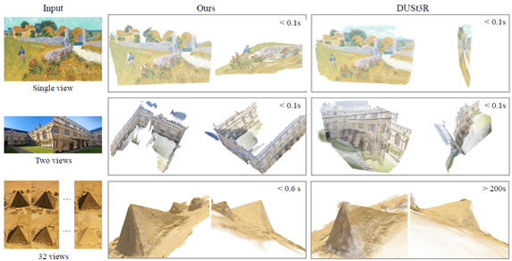

VGGT: Visual Geometry Grounded Transformer
Jianyuan Wang1,2 Minghao Chen1,2 Nikita Karaev1,2 Andrea Vedaldi1,2
Christian Rupprecht1 David Novotny2
1Visual Geometry Group, University of Oxford 2Meta AI
図1. VGGT は、3D 注釈付きデータの宝庫でトレーニングされた、最小限の 3D 帰納バイアスを備えた大規模なフィードフォワードトランスフォーマーである。最大数百枚の画像を受け入れ、すべての画像のカメラ、ポイントマップ、深度マップ、ポイントトラックを 1 秒未満で一度に予測する。これにより、多くの場合、それ以上の処理を行わなくても、最適化ベースの代替手段よりも優れたパフォーマンスが得られる。
概要
我々は、フィードフォワードニューラルネットワークである VGGT を紹介する。これは、カメラパラメータ、ポイントマップ、深度マップ、3D ポイントトラックなど、シーンのすべての主要な 3D 属性を、1つ、数個、または数百のビューから直接推測する。このアプローチは、モデルが通常単一のタスクに制限され、そのタスクに特化されている 3Dコンピュータービジョンの進歩である。また、シンプルで効率的で、1 秒未満で画像を再構築し、視覚ジオメトリ最適化技術による後処理を必要とする代替手段よりも優れている。このネットワークは、カメラ パラメータ推定、マルチビュー深度推定、高密度ポイント クラウド再構成、3D ポイントトラッキングなど、複数の 3D タスクで最先端の結果を達成する。また、事前トレーニング済みの VGGT を機能バックボーンとして使用すると、非剛体ポイントトラッキングやフィードフォワードの新規ビュー合成などのダウンストリーム タスクが大幅に強化されることも示す。コードとモデルは、次の場所で公開されている。https://github.com/facebookresearch/vggt.
1. はじめに
我々は、フィードフォワードニューラルネットワークを利用して、一連の画像で撮影されたシーンの3D属性を推定する問題について考える。従来、3D再構成は、バンドル調整(BA)[45]などの反復最適化手法を利用した視覚幾何学法でアプローチされてきた。機械学習は、特徴マッチングや単眼深度予測など、幾何学だけでは解決できないタスクに対処する上で、しばしば重要な補完的役割を果たしてきた。統合はますます緊密になり、現在ではVGGSfM[125]などの最先端のStructure-from-Motion(SfM)法が、微分可能なBAを介して機械学習と視覚幾何学をエンドツーエンドで組み合わせている。それでも、視覚幾何学は3D再構成において依然として重要な役割を果たしており、複雑さと計算コストが増加している。
ネットワークがますます強力になるにつれて、最終的には、ジオメトリの後処理をほぼ完全に回避して、ニューラル ネットワークによって 3D タスクを直接解決できるかどうかが問われる。DUSt3R [129] やその進化形である MASt3R [62] などの最近の貢献は、この方向で有望な結果を示しているが、これらのネットワークは一度に2つの画像しか処理できず、より多くの画像を再構築したり、対ごとに再構築したものを融合するのに後処理に依存している。
この論文では、後処理で 3D ジオメトリを最適化する必要性をなくすためのさらなるステップを踏む。そのために、シーンの1つ、数個、または数百の入力ビューから3D再構成を実行するフィードフォワード ニューラルネットワークである Visual Geometry Grounded Transformer (VGGT) を導入する。VGGT は、カメラパラメーター、深度マップ、ポイントマップ、3D ポイントトラックなど、3D 属性の完全なセットを予測する。これは、1回のフォワードパスで数秒で実行される。驚くべきことに、VGGT は、さらに処理を行わなくても、最適化ベースの代替手段よりも優れたパフォーマンスを発揮することがよくある。これは、使用可能な結果を得るために依然としてコストのかかる反復的な後処理を必要とする DUSt3R、MASt3R、または VGGSfM とは大きく異なる。
また、3D再構成のために特別なネットワークを設計する必要がないことも示している。代わりに、VGGTは、特に3Dまたはその他の帰納バイアスを持たない（フレーム単位の注意とグローバル注意の切り替えを除く）標準的な大規模トランスフォーマー[119]に基づいているが、3D注釈付きの公開データセットを多数使用してトレーニングされている。したがって、VGGTは、GPT [1、29、148]、CLIP [86]、DINO [10、78]、Stable Diffusion [34]などの自然言語処理およびコンピュータービジョン用の大規模モデルと同じ型で構築されている。これらは、新しい特定のタスクを解決するために微調整できる多目的なバックボーンとして登場した。同様に、VGGTによって計算された特徴は、動的ビデオでのポイントトラッキングや新しいビュー合成などの下流タスクを大幅に強化できることを示している。
大規模な 3D ニューラル ネットワークの最近の例としては、DepthAnything [142]、MoGe [128]、LRM [49] などがある。ただし、これらのモデルは、単眼深度推定や新しいビュー合成など、単一の 3D タスクにのみ焦点を当てている。対照的に、VGGT は共有バックボーンを使用して、関心のあるすべての 3D 量を一緒に予測する。これらの相互に関連する 3D 属性を予測するように学習すると、潜在的な冗長性にもかかわらず、全体的な精度が向上することを実証する。同時に、推論中に、個別に予測された深度とカメラ パラメーターからポイント マップを導出できるため、専用のポイント マップ ヘッドを直接使用する場合と比較して、精度が向上することを示す。
要約すると、我々は次のような貢献をしている。(1) VGGT を紹介する。これは、シーンの1枚、数枚、または数百枚の画像が与えられれば、カメラの固有値と外部値、ポイント マップ、深度マップ、3D ポイント トラックなど、すべての主要な 3D 属性を数秒で予測できる大規模なフィードフォワード トランスフォーマーである。(2) VGGT の予測は直接使用可能であり、非常に競争力があり、遅い後処理最適化手法を使用する最先端の方法よりも優れていることを実証する。(3) さらに、BA 後処理と組み合わせると、VGGT は、3Dタスクのサブセットに特化した方法と比較しても、全体的に最先端の結果を達成し、品質が大幅に向上することがよくある。
我々のコードとモデルは、以下で公開されている。https://github.com/facebookresearch/vggt. これにより、この方向へのさらなる研究が促進され、高速で信頼性が高く、用途の広い 3D 再構築のための新しい基盤が提供され、コンピューター ビジョン コミュニティに利益をもたらすと確信している。
2. 関連研究
Structure from Motion は、カメラパラメータを推定し、異なる視点から撮影された静止シーンの画像セットからスパースポイントクラウドを再構築する、古典的なコンピュータビジョンの問題である[45、77、80]。従来のSfMパイプライン[2、36、70、94、103、134]は、画像マッチング、三角測量、バンドル調整など、複数のステージで構成されている。COLMAP[94]は、従来のパイプラインに基づく最も一般的なフレームワークである。近年、ディープラーニングによりSfMパイプラインの多くのコンポーネントが改善され、キーポイント検出[21、31、116、149]と画像マッチング[11、67、92、99]が2つの主要な焦点領域となっている。最近の手法 [5, 102, 109, 112, 113, 118,
122, 125, 131, 160] では、エンドツーエンドの微分可能な SfM が検討され、VGGSfM [125] は、困難なフォトツーリズムのシナリオで従来のアルゴリズムを上回る性能を発揮し始めた。
マルチビューステレオは、通常、SfM で推定されることが多い既知のカメラパラメータを前提として、複数の重なり合った画像からシーンのジオメトリを高密度に再構築することを目的としている。MVS 手法は、従来の手作業による手法 [38、39、96、130]、グローバル最適化 [37、74、133、147]、学習ベースの手法 [42、72、84、145、157] の 3 つのカテゴリに分類できる。SfM と同様に、学習ベースの MVS アプローチは最近大きな進歩を遂げている。ここでは、DUSt3R [129] と MASt3R [62] は、MVS に似ているが、カメラパラメータを必要とせずに、2つのビューから位置合わせされた高密度ポイントクラウドを直接推定する。いくつかの同時研究 [111、127、141、156] では、DUSt3R のテスト時間最適化をニューラル ネットワークに置き換えることを検討しているが、これらの試みでは、DUSt3R に匹敵するパフォーマンスしか得られない。VGGTでは DUSt3R および MASt3R を大幅に上回る。
Tracking-Any-Point は、Particle Video [91] で初めて導入され、ディープラーニング時代に PIP [44] によって復活した。これは、動的な動きを含むビデオシーケンス全体で関心のあるポイントを追跡することを目的としている。ビデオといくつかの 2D クエリポイントが与えられた場合、タスクは、他のすべてのフレームでこれらのポイントの 2D 対応を予測することである。TAP-Vid [23] はこのタスクの 3 つのベンチマークと、後に TAPIR [24] で改良された単純なベースライン メソッドを提案した。CoTracker [55, 56] は、異なるポイント間の相関関係を利用してオクルージョンを追跡し、DOT [60] はオクルージョンを介した高密度の追跡を可能にした。最近、TAPTR [63] はこのタスク用のエンドツーエンドのトランスフォーマーを提案し、LocoTrack [13] は、一般的に使用されるポイントごとの機能を近くの領域に拡張した。これらの方法はすべて、特殊なポイント トラッカーです。ここでは、VGGT の機能を既存のポイントトラッカーと組み合わせると、最先端の追跡パフォーマンスが得られることを実証する。
図2. アーキテクチャの概要。我々のモデルは、まずDINOによって入力画像をトークンにパッチし、カメラ予測のためにカメラトークンを追加する。次に、フレーム単位の自己注意層とグローバル自己注意層を交互に切り替える。カメラヘッドはカメラの外部および内部の最終予測を行い、DPT [87] ヘッドは高密度出力に対して予測を行う。
3. 手法
ここでは、一連の画像を入力として取り込み、さまざまな 3D 量を出力として生成する大規模なトランスフォーマーである VGGT を紹介する。まず、セクション 3.1 で問題を紹介し、続いてセクション 3.2 でアーキテクチャ、セクション 3.3 でその予測ヘッド、そしてセクション 3.4 でトレーニングのセットアップについて説明する。
3.1. 問題の定義と表記
入力は同じ3Dシーンを観察するRGB画像 \(I_{i}\in \mathbb R^{3×H×W}\) のN枚のシーケンス \((I_{i})_{i=1}^N\) である。VGGT のトランスフォーマーは、このシーケンスをフレームごとに 1 つずつ対応する 3D 注釈のセットにマッピングする関数である:
\begin{equation}
f\left(\left(I_{i}\right)_{i=1}^N\right)\left(g_{i},D_{i},P_{i},T_{i}\right)_{i=1}^N
\label{(1)}
\end{equation}
従ってトランスフォーマーは各画像 \(I_{i}\) をカメラパラメータ(内部パラメータと外部パラメータ) \(g_{i}\in\mathbb R^9\), 深度マップ \(D_{i}\in\mathbb R^{H×W}\), ポイントマップ \(P_{i}\in\mathbb R^{3×H×W}\), それにポイントトラッキング用のC次元特徴のグリッド \(T_{i}\in \mathbb R^{C×H×W}\) にマップする。次に、これらがどのように定義されるかを説明する。
カメラパラメータ gi については, 文献[125]のパラメータ化を使用し, 回転クォータニオン \(q\in\mathbb R^4\), 並進ベクトル \(t\in\mathbb R^3\), および視野 \(f\in\mathbb R^2\) の連結である \(g = [q, t, f ]\) を設定する。カメラの主点は画像の中心にあると仮定するが、これはSfMフレームワークで一般的である[95, 125]。
画像 \(I_{i}\) のドメインを \(\mathit I(I_{i}) = \{1, . . . ,H\} × \{1, . . . ,W\}\), つまりピクセル位置の集合で表す。深度マップ \(D_{i}\) はi 番目のカメラから観測された各ピクセル位置 \(y\in I(I_{i})\) を、対応する深度値 \(D_{i}(y)\in\mathbb R^+\) に関連付ける。同様に、ポイントマップ Pi は、各ピクセルを対応する 3Dシーンポイント \(P_{i}(y)\in\mathbb R^3\) に関連付ける。重要なのは、DUSt3R [129]と同様に、ポイントマップは視点不変であるということである。つまり、3Dポイント\(P_{i}(y)\)は、ワールド参照フレームとして採用する最初のカメラg1の座標系で定義される。
最後に、キーポイントの追跡については、[25, 57]などのトラックエニポイント法に従う。つまり、クエリ画像 \(I_q\) 内の固定クエリ画像ポイント \(y_q\) が与えられると、ネットワークは、すべての画像 \(I_i\) 内の対応する2Dポイント\(y_i\in\mathbb R^2\) によって形成されるトラック \(T^⋆(y_q)=(y_i)_{i=1}^N\) を出力する。
上記のトランスフォーマー \(f\) は、トラックを直接出力するのではなく、追跡に使用される特徴 \(T_i\in\mathbb R^{C×H×W}\) を出力することに注意。追跡は、セクション 3.3 で説明される別のモジュールに委任され、関数 \(T\left(\left(y_j\right)_{j=1}^M, \left(T_i\right)_{i=1}^N\right)=\left(\left(\hat{y}_{j,i}\right)_{i=1}^N\right)_{j=1}^M\) を実装する。このモジュールは、トランスフォーマー \(f\) によって出力されたクエリ ポイント \(y_q\) と高密度追跡特徴 \(T_i\) を取り込み、トラックを計算する。2つのネットワーク \(f\) と \(T\) は、エンドツーエンドで同時トレーニングされる。
予測の順序。入力シーケンス内の画像の順序は任意であるが、最初の画像が参照フレームとして選択される。ネットワークアーキテクチャは、最初のフレームを除くすべてのフレームに対して順序が等価になるように設計されている。
過完備予測。注目すべきことに、VGGTによって予測されるすべての量が独立しているわけではない。例えば、DUSt3R [129]で示されているように、カメラパラメータ \(g\) は、例えばPerspective-n-Point（PnP）問題[35, 61]を解くことによって、不変点マップ \(P\) から推測することができる。

図3. 実際の画像における、予測された 3D ポイントと DUSt3R の定性的な比較。上段に示すように、我々の方法は油絵の幾何学的構造を正しく予測しているが、DUSt3R はわずかに歪んだ平面を予測している。2段目では、我々の方法は 2つの画像から 3D シーンを重複なしで正しく復元しているが、DUSt3R は失敗している。3段目は、テクスチャが繰り返される難しい例であるが、我々の予測は依然として高品質である。32フレームを超える例は含まれていない。この制限を超えると DUSt3R はメモリ不足になるためである。
さらに、深度マップはポイントマップとカメラパラメータから推測できる。ただし、セクション 4.5 で示すように、VGGT にトレーニング中に前述のすべての量を明示的に予測させると、これらが閉じた関係で関連している場合でも、パフォーマンスが大幅に向上する。一方、推論中は、個別に推定された深度マップとカメラパラメータを組み合わせると、特殊なポイントマップブランチを直接使用するよりも正確な 3D ポイントが生成されることがわかる。
3.2. 特徴バックボーン
3Dディープラーニングの最近の研究[53, 129, 132]に従って、最小限の3D帰納バイアスを備えたシンプルなアーキテクチャを設計し、モデルが十分な量の3D注釈付きデータから学習できるようにする。特に、モデル \(f\) を大きなトランスフォーマーとして実装する[119]。この目的のために、各入力画像 \(I\) は最初にDINO [78]を介してKトークンのセット1 \(t^I\in\mathbb R^{K×C}\) にパッチ化される。すべてのフレームからの画像トークンの組み合わせセット、つまり \(t^I = ∪_{i=1}^N\{t_{i}I^i\}\) は、その後、メインネットワーク構造、フレーム単位のレイヤーとグローバルセルフアテンションレイヤーを交互に処理される。
1 トークンの数は画像の解像度によって異なる。
交互注意 標準的なトランスフォーマーの設計を少し調整して、交互注意 (AA) を導入し、トランスフォーマーが各フレーム内とグローバルに交互に焦点を合わせるようにする。具体的には、フレーム単位の自己注意は各フレーム内のトークン \(t_k^I\) に個別に注意を向け、グローバル自己注意はすべてのフレームのトークン \(t^I\) に同時に注意を向ける。これにより、異なる画像間で情報を統合することと、各画像内のトークンのアクティベーションを正規化することの間でバランスが取れる。デフォルトでは、グローバル注意とフレーム単位注意の L = 24 層を使用する。セクション 4 では、AA アーキテクチャが大幅なパフォーマンス向上をもたらすことを示す。アーキテクチャではクロス注意層は使用せず、自己注意層のみを使用することに注意。
3.3. 予測ヘッド
ここでは、\(f\) がカメラパラメータ、深度マップ、ポイントマップ、ポイントトラックをどのように予測するかについて説明する。まず、各入力画像 \(I_{i}\) に対して、対応する画像トークン \(t_{i}^I\) に追加のカメラトークン \(t_{i}^g\in\mathbb R^{1×C'}\) と4つのレジスタトークン [19] \(t_{i}^R\in\mathbb R^{4×C'}\) を追加する。次に、\((t_{i}^I, t_{i}^g, t_{i}^R)_{i=1}^N\) の連結が AA トランスフォーマーに渡され、出力トークン \((\hat{t}_{i}^I, \hat{t}_{i}^g, \hat{t}_{i}^R)_{i=1}^N\) が生成される。ここで、最初のフレームのカメラトークンとレジスタ トークン \((t_{1}^g :=\bar{t}^g, t_{1}^R := \bar{t}^R)\) は、学習可能な他のすべてのフレーム \((t_{i}^g := \overline{\bar{t}}^g, t_{i}^R := \overline{\bar{t}}^R, i\in [2, . . . ,N])\) とは異なる学習可能なトークン セット tg、tR に設定されている。これにより、モデルは最初のフレームを他のフレームと区別し、最初のカメラの座標フレームで 3D 予測を表すことができる。洗練されたカメラトークンとレジスタトークンがフレーム固有になることに注意。これは、AA トランスフォーマーにフレーム単位の自己注意レイヤーが含まれており、トランスフォーマーがカメラ トークンとレジスタトークンを同じ画像の対応するトークンと一致させることができるためである。一般的な慣例に従い、出力レジスタトークン \(\hat{t}_{i}^R\) は破棄され、\(\hat{t}_{i}^I, \hat{t}_{i}^g\) が予測に使用される。

図4. ポイントマップ推定の追加の視覚化。カメラ錐台は、推定されたカメラの姿勢を示す。視覚化の品質を向上させるには、インタラクティブなデモを参照。
座標フレーム 前述のように、カメラ、ポイントマップ、および深度マップは、最初のカメラ \(g_1\) の座標フレームで予測される。そのため、最初のカメラのカメラ外部出力は恒等関数に設定される。つまり、最初の回転クォータニオンは \(q_{1} = [0, 0, 0, 1]\)、最初の並進ベクトルは \(t_{1} = [0, 0, 0]\) である。特別なカメラトークンとレジスタトークン \(t_{1}^g := t^g, t_{1}^R := t^R\) により、トランスフォーマーは最初のカメラを識別できる。
カメラ予測 カメラパラメータ \((\hat{g})_{i=1}^N\) は、4 つの追加の自己注意層とそれに続く線形層を使用して、出力カメラトークン \((\hat{t}_{i}^g)_{i=1}^N\) から予測される。これにより、カメラの内部および外部を予測するカメラヘッドが形成される。
高密度予測 出力画像トークン \(\hat{t}_{i}^I\) は、高密度出力、つまり深度マップ \(D_{i}\)、ポイントマップ \(P_{i}\)、および追跡特徴 \(T_{i}\) を予測するために使用される。より具体的には、\(\hat{t}_{i}^I\) は最初に DPTレイヤー [87] を使用して高密度特徴マップ \(F_{i}\in\mathbb R^{C''×H×W}\) に変換される。次に、各 \(F_{i}\) は 3×3 畳み込みレイヤーを使用して、対応する深度マップとポイントマップ \(D_{i}\) および \(P_{i}\) にマッピングされる。さらに、DPT ヘッドは高密度特徴 \(T_{i}\in\mathbb R^{C×H×W}\) も出力し、追跡ヘッドへの入力として機能する。また、各深度マップとポイントマップに対して、偶然性不確実性[58, 76] \(Σ_{i}^D\in\mathbb R_{+}^{H×W}\)と\(Σ_{i}^P\in\mathbb R_{+}^{H×W}\)をそれぞれ予測する。セクション3.4で説明したように、不確実性マップは損失に使用され、トレーニング後はモデルの予測に対する信頼度に比例する。
追跡 追跡モジュール\(T\)を実装するために、密な追跡特徴\(T_{i}\)を入力として受け取るCoTracker2アーキテクチャ[57]を使用する。具体的には、クエリ画像 \(I_{q}\) 内のクエリ ポイント \(y_{j}\) が与えられると (トレーニング中は常に \(q = 1\) に設定するが、他の画像もクエリとして使用できる可能性がある)、トラッキングヘッド \(T\) は、\(y\) と同じ 3D ポイントに対応するすべての画像 \(I_{i}\) 内の 2D ポイントのセット \(T\left(\left(y_{j}\right)_{j=1}^M, \left(T_{i}\right)_{i=1}^N\right) = \left(\left(\hat{y}_{j,i}\right)_{i=1}^N\right)_{j=1}^M\) を予測する。これを行うには、まずクエリ画像の特徴マップ \(T_{q}\) をクエリポイント \(y_{j}\) で双線形サンプリングして、その特徴を取得する。次に、この特徴を他のすべての特徴マップ \(T_{i}, i\neq q\) と相関させて、相関マップのセットを取得する。次に、これらのマップを自己注意層で処理して、最終的な 2D ポイント \(\hat{y}_{i}\) を予測する。これらはすべて \(y_{j}\) に対応している。VGGSfM [125] と同様に、我々のトラッカーは入力フレームの時間的な順序を想定していないため、ビデオだけでなく任意の入力画像セットに適用できることに注意。
3.4. トレーニング
トレーニング損失 マルチタスク損失を使用して、VGGT モデルをエンドツーエンドでトレーニングする:
\begin{equation}
\mathcal L=\mathcal L_{camera}+\mathcal L_{depth}+\mathcal L_{pmap}+\lambda\mathcal L_{track}
\label{b}
\end{equation}
カメラ損失 (\(\mathcal L_{camera}\))、深度損失 (\(\mathcal L_{depth}\))、ポイントマップ損失 (\(\mathcal L_{pmap}\)) の範囲は似ており、互いに重み付けする必要がないことがわかった。追跡損失 \(\mathcal L_{track}\) は、係数 \(\lambda = 0.05\) で重み付けが下げられる。各損失項について順に説明する。
カメラ損失 \(\mathcal L_{camera}\) は、カメラ \(\hat{g}:\mathcal L_{camera} = \sum_{i=1}^N ||\hat{g}_{i}-g_{i}||_{\epsilon}\) の教師になり、予測されたカメラ \(\hat g_i\) と実際のカメラ \(g_{i}\) を Huber 損失 \(| · |_{\epsilon}\) を使用して比較する。
深度損失 \(\mathcal L_{depth}\)はDUSt3R [129]に従い、予測深度\(\hat{D}_{i}\)と真の深度\(D_{i}\)の不一致を予測不確実性マップ\(\hat{\Sigma}_{i}^D\)で重み付けする偶然性不確実性損失[59, 75]を実装する。DUSt3Rとは異なり、単眼深度推定で広く使用されている勾配ベースの項も適用する。したがって、深度損失は \(\mathcal L_{depth}=\Sigma_{i=1}^N‖\Sigma_{i}^D\odot (\hat{D}_{i}-D_{i}||+||\Sigma_{i}^D\odot(\nabla\hat{D}_{i}-\nabla D_{i})||-\alpha log Sigma_{i}^D\) であり、\(\odot\) はチャネルブロードキャストの要素ごとの積である。ポイントマップ損失も同様に定義されるが、ポイントマップ不確実性つきである。 \(\Sigma_{i}^P: \mathcal L_{pmap} =\Sigma_{i=1}^N‖\Sigma_{i}^P\odot(\hat{P}_{i}-P_{i})‖ + ∥\Sigma_{i}^P\odot(\nabla\hat{P}_{i} −\nabla P_{i})∥ −\alpha log\Sigma_{i}^P\)。
最後に、追跡損失は \(\mathcal L_{track} = \Sigma_{j=1}^M \Sigma_{i=1}^N ‖y_{j,i} −\hat{y}_{j,i}‖\) で与えられる。ここで、外側の合計は、クエリ画像 \(I_{q}, y_{j,i}\) 内のすべての真のクエリ ポイント \(y_j\) にわたって実行され、画像 \(I_{i}\) 内の \(y_{j}\) の真の対応であり、\(\hat{y}_{j,i}\) は、追跡モジュールの適用 \(T\left(\left(y_{j}\right)_{j=1}^M, \left(T_{i}\right)_{i=1}^N\right)\) によって取得された対応する予測である。さらに、CoTracker2 [57]に従って、可視性損失（バイナリクロスエントロピー）を適用して、特定のフレームで点が可視かどうかを推定する。
正解座標の正規化 シーンを拡大縮小したり、グローバル参照フレームを変更したりしても、シーンの画像はまったく影響を受けない。つまり、そのようなバリアントは 3D 再構築の正当な結果である。データを正規化することでこの曖昧さを取り除き、標準的な選択を行い、この特定のバリアントを出力するようにトランスフォーマーに指示する。[129] に従い、まず、すべての量を最初のカメラ \(g_1\) の座標フレームで表現する。次に、ポイントマップ \(P\) 内のすべての 3D ポイントから原点までの平均ユークリッド距離を計算し、このスケールを使用してカメラの移動 \(t\)、ポイント マップ \(P\)、および深度マップ \(D\) を正規化する。重要なのは、[129] とは異なり、このような正規化をトランスフォーマーによる予測出力に適用しないことである。代わりに、トレーニングデータから選択した正規化を学習するように強制する。
実装の詳細 デフォルトでは、グローバル アテンションとフレーム単位のアテンションのそれぞれ L = 24 層を採用している。モデルは合計約 12 億のパラメーターで構成されている。AdamW オプティマイザーを使用してトレーニング損失 (2) を 160K 反復で最適化することにより、モデルをトレーニングする。ピーク学習率が 0.0002 でウォームアップが 8K 反復のコサイン学習率スケジューラを使用する。バッチごとに、ランダムなトレーニング シーンから 2～24 フレームをランダムにサンプリングする。入力フレーム、深度マップ、ポイントマップは、最大 518 ピクセルのサイズに変更される。アスペクト比は 0.33 ～ 1.0 の間でランダム化される。また、フレームにはカラー ジッタリング、ガウスブラー、グレースケール拡張もランダムに適用する。トレーニングは 64 個の A100 GPU で 9 日間にわたって実行される。トレーニングの安定性を確保するために、しきい値 1.0 の勾配ノルムクリッピングを採用している。bfloat16 精度と勾配チェックポイントを活用して、GPU メモリと計算効率を向上させる。
トレーニングデータ モデルは、Co3Dv2 [88]、BlendMVS [146]、DL3DV [69]、MegaDepth [64]、Kubric [41]、WildRGB [135]、ScanNet [18]、Hyper-Sim [89]、Mapillary [71]、Habitat [107]、Replica [104]、MVS-Synth [50]、PointOdyssey [159]、Virtual KITTI [7]、Aria Synthetic Environments [82]、Aria Digital Twin [82]、およびObjaverse [20]に類似したアーティスト作成アセットの合成データセットを含む、大規模で多様なデータセットを使用してトレーニングされた。これらのデータセットは、屋内および屋外の環境を含むさまざまなドメインにまたがり、合成および現実世界のシナリオを網羅している。これらのデータセットの3D注釈は、直接センサーキャプチャ、合成エンジン、SfM技術[95]などの複数のソースから取得されている。我々のデータセットの組み合わせは、サイズと多様性の点でMASt3R [30]のものとほぼ同等である。
4. 実験
このセクションでは、複数のタスクにわたって我々の方法を最先端のアプローチと比較し、その有効性を示す。
4.1. カメラ姿勢推定
まず、表1に示すように、カメラの姿勢推定のためにCO3Dv2 [88]とRealEstate10K [161]データセットでこの方法を評価した。[124]に従って、シーンごとにランダムに10枚の画像を選択し、RRAとRTAを組み合わせた標準メトリックAUC@30を使用して評価する。RRA（相対回転精度）とRTA（相対並進精度）は、各画像ペアの回転と並進の相対角度誤差をそれぞれ計算する。これらの角度誤差は、精度スコアを決定するためにしきい値化される。AUCは、さまざまなしきい値にわたるRRAとRTA間の最小値の精度しきい値曲線の下の領域である。表1の（学習可能な）方法は、RealEstate10Kではなく、Co3Dv2でトレーニングされている。我々のフィードフォワードモデルは、DUSt3R/MASt3RのグローバルアライメントやVGGSfMのバンドル調整など、通常10秒以上かかる計算コストの高い最適化後の手順を採用するものも含め、両方のデータセットのすべてのメトリックにおいて競合手法を一貫して上回っている。対照的に、VGGTはフィードフォワード方式でのみ動作しながら優れたパフォーマンスを実現し、同じハードウェアでわずか0.2秒しかかからない。同時研究[111、127、141、156]（‡で示す）と比較すると、我々の方法は、最速のバリアントFast3R [141]と同等の速度で、大幅なパフォーマンス上の利点を示している。さらに、我々のモデルのパフォーマンス上の利点は、表1に示したどの方法もトレーニングされていないRealEstate10Kデータセットでさらに顕著である。これは、VGGTの優れた一般化を検証している。
我々の結果はまた、VGGT を BA のような視覚的幾何学最適化の最適化手法と組み合わせることで、さらに改善できることを示している。具体的には、予測されたカメラのポーズとトラックを BA で改良することで、精度がさらに向上する。我々の方法は、BA の適切な初期化として機能する、ほぼ正確なポイント/深度マップを直接予測することに注意。これにより、[125] で行われた BA での三角測量と反復改良の必要性がなくなり、我々のアプローチが大幅に高速化される (BA を使用しても約 2 秒のみ)。したがって、VGGT のフィードフォワード モードは、これまでのすべての代替手段 (フィードフォワードであるかどうかに関係なく) よりも優れているが、事後最適化によってもメリットが得られるため、まだ改善の余地がある。

表1. RealEstate10K [161]とCO3Dv2 [88]での10枚のランダムフレームによるカメラ姿勢推定。すべての指標は高いほど良い。いずれの手法もRe10Kデータセットでトレーニングされていない。実行時間は1つのH100 GPUを使用して測定された。‡でマークされた手法は同時作業を表す。

表2. DTU [51]データセットにおける高密度MVS推定。既知のグラウンドトゥルースカメラで動作する手法は表の上部にあり、正解カメラがわからない手法は表の下部にある。

表3. ETH3D [97]によるポイントマップ推定。DUSt3RとMASt3Rはグローバルアライメントを使用するのに対し、我々の方法はフィードフォワードを使用するため、はるかに高速である。Ours (Point)の行はポイントマップヘッドを直接使用した結果を示し、Ours (Depth + Cam)は深度マップヘッドとカメラヘッドを組み合わせてポイントクラウドを構築した結果を示す。

表4. ScanNet-1500 [18, 92]での2視点マッチングの比較。我々のトラッキングヘッドは2視点設定に特化していないが、最先端の2視点マッチング方法Romaよりも優れた性能を発揮する。AUCで測定（高いほど良い）。
4.2. 多視点深度推定
MASt3R [62] に倣い、DTU [51] データセットでマルチビュー深度推定結果をさらに評価する。精度 (予測から真実までの最小ユークリッド距離)、完全性 (正解から予測までの最小ユークリッド距離)、およびそれらの平均全体 (つまり、面取り距離) を含む標準的な DTU メトリックを報告する。表 2 では、DUSt3R と VGGT は、正解カメラに関する情報なしで動作する唯一の 2 つの方法である。MASt3R は、正解カメラを使用して一致を三角測量することにより深度マップを導出する。一方、GeoMVS-Net などのディープ マルチビュー ステレオ法では、正解カメラを使用してコスト ボリュームを構築する。

図5. 剛体および動的ポイントトラッキングの視覚化。上: VGGTのトラッキングモジュールTは、静的シーンを描写する順序付けられていない入力画像セットのキーポイントトラックを出力する。下: VGGTのバックボーンを微調整して、順次入力を処理する動的ポイントトラッカーCoTracker [56]を強化する。
我々の方法は DUSt3R を大幅に上回り、総合スコアを 1.741 から 0.382 に下げた。さらに重要なのは、テスト時に正解カメラを知っている方法に匹敵する結果を達成していることである。この大幅なパフォーマンス向上は、複数のペアワイズカメラ三角測量の平均のみを取る DUSt3R などのアドホックなアライメント手順に頼るのではなく、マルチビュー三角測量をネイティブに推論するようにモデルに教える、我々のモデルのマルチイメージトレーニングスキームに起因すると考えられる。
4.3. ポイントマップ推定
また、ETH3D [97]データセットで、予測ポイントクラウドの精度をDUSt3RおよびMASt3Rと比較した。各シーンについて、10フレームをランダムにサンプリングした。予測ポイントクラウドは、Umeyama [117]アルゴリズムを使用して正解に位置合わせされる。結果は、公式マスクを使用して無効なポイントをフィルタリングした後に報告される。ポイントマップ推定の精度、完全性、および全体（面取り距離）を報告する。表3に示すように、DUSt3RとMASt3Rは高価な最適化（グローバルアライメント–シーンあたり約10秒）を実行するが、我々の方法は、再構成あたりわずか0.2秒で、単純なフィードフォワード方式でそれらを大幅に上回っている。
一方、推定ポイント マップを直接使用する場合と比較して、深度とカメラ ヘッドからの予測 (つまり、予測されたカメラ パラメータを使用して予測深度マップを 3D に逆投影する) の方が精度が高いことがわかった。これは、トレーニング中にカメラ、深度マップ、ポイント マップが同時に教師あり学習されるにもかかわらず、複雑なタスク (ポイント マップ推定) をより単純なサブ問題 (深度マップとカメラ予測) に分解することの利点によるものと考えている。
図3 に、現実のシーンでの DUSt3R との定性的な比較を示し、図 4 にその他の例を示す。VGGT は高品質の予測を出力し、一般化も良好で、油絵、重複しないフレーム、砂漠のような繰り返しまたは均一なテクスチャを持つシーンなど、難しい領域外の例で優れている。

表 5. ETH3D 上の Transformer Backbone のアブレーション スタディ。交互注意アーキテクチャを 2 つのバリアント (グローバル自己注意のみを使用するものとクロス注意を使用するもの) と比較する。
4.4. 画像マッチング
2視点画像マッチングは、コンピュータビジョンにおいて広く研究されているトピックである [68, 93, 105]。これは、2視点のみに制限された剛体点追跡の特殊なケースを表しており、したがって、我々のモデルがこのタスクに特化していないにもかかわらず、追跡精度を測定するのに適した評価ベンチマークである。我々は、ScanNetデータセット [18] の標準プロトコル [33, 93] に従い、その結果を表4に報告する。各画像ペアについて、一致を抽出し、それを使用して必須行列を推定し、それを相対カメラポーズに分解する。最終的な測定基準は、AUCによって測定された相対ポーズ精度である。評価には、ALIKED [158] を使用してキーポイントを検出し、それらをクエリポイント \(y_q\) として扱う。これらは、2番目のフレームで対応を見つけるために、追跡ブランチ \(T\) に渡される。評価ハイパーパラメータ（一致数、RANSACしきい値など）は、Roma [33] から採用する。 2 ビューマッチング用に明示的にトレーニングされていないにもかかわらず、表 4 は VGGT がすべてのベースラインの中で最も高い精度を達成していることを示している。
4.5. アブレーションスタディ
特徴バックボーン まず、提案する交互注意設計の有効性を、(a) グローバル自己注意のみ、および (b) クロス注意という 2 つの代替注意アーキテクチャと比較することで検証する。公平な比較を確実にするために、すべてのモデルバリアントは、合計 2L の注意層を使用して、同じ数のパラメーターを維持する。クロス注意バリアントの場合、各フレームは他のすべてのフレームからのトークンに独立して注意を払い、フレーム間の情報融合を最大化するが、特に入力フレームの数が増えると、実行時間が大幅に増加する。隠れた次元やヘッドの数などのハイパーパラメーターは同じままである。ポイントマップ推定精度は、モデルがシーンの形状とカメラパラメーターを同時に理解していることを反映するため、アブレーション研究の評価指標として選択されている。表 5 の結果は、交互注意アーキテクチャが両方のベースラインバリアントを明らかに上回っていることを示している。さらに、他の予備的な探索実験では、クロスアテンションを使用するアーキテクチャは、セルフアテンションのみを使用するアーキテクチャと比較して、一般的にパフォーマンスが低いことが一貫して示された。
マルチタスク学習 また、出力が重複する可能性がある場合でも、単一のネットワークをトレーニングして複数の 3D 量を同時に学習することの利点も検証した (たとえば、深度マップとカメラ パラメータを組み合わせるとポイント マップが生成される)。表 6 に示すように、カメラ、深度、またはトラックの推定なしでトレーニングすると、ポイント マップの推定精度が著しく低下する。特に、カメラパラメータ推定を組み込むとポイント マップの精度が明らかに向上するが、深度推定はわずかな改善しか寄与しない。

表 6. マルチタスク学習のアブレーション研究。カメラ、深度、トラック推定を同時にトレーニングすると、ETH3D でのポイント マップ推定の精度が最も高くなることを示している。
4.6. 下流タスク向け微調整
ここでは、VGGT 事前トレーニング済み特徴抽出器が下流のタスクで再利用できることを示す。フィードフォワードの新しいビュー合成と動的ポイント追跡についてこれを示す。
フィードフォワード型の新規視点合成は急速に進歩している[8, 43, 49, 53, 108, 126, 140, 155]。既存の方法のほとんどは、カメラパラメータが既知の画像を入力として受け取り、新しいカメラ視点に対応するターゲット画像を予測する。明示的な3D表現に頼る代わりに、LVSM [53]に従い、VGGTを修正してターゲット画像を直接出力する。ただし、入力フレームのカメラパラメータが既知であるとは想定していない。
LVSM のトレーニングおよび評価プロトコルに厳密に従う。たとえば、4 つの入力ビューを使用し、Pl¨ucker レイを採用してターゲットの視点を表す。VGGT に簡単な変更を加える。以前と同様に、入力画像は DINO によってトークンに変換される。次に、ターゲット ビューについては、畳み込み層を使用して Pl¨ucker レイ画像をトークンにエンコードする。入力画像とターゲット ビューの両方を表すこれらのトークンは、AA トランスフォーマーによって連結され、処理される。その後、DPT ヘッドを使用して、ターゲット ビューの RGB カラーを回帰する。ソース画像には Pl¨ucker レイを入力しないことに注意することが重要。したがって、モデルにはこれらの入力フレームのカメラ パラメーターは与えられない。
LVSMはObjaverseデータセット[20]でトレーニングされた。我々はObjaverseの約20%のサイズの同様の内部データセットを使用する。トレーニングと評価の詳細については[53]を参照のこと。表7に示すように、入力カメラパラメータを必要とせず、LVSMよりも少ないトレーニングデータを使用しているにもかかわらず、我々のモデルはGSOデータセット[28]で競争力のある結果を達成している。より大きなトレーニングデータセットを使用することで、より良い結果が得られると期待している。定性的な例を図6に示す。
図 6. 新規ビュー合成の定性的例。上の行は入力画像、中段はターゲット視点からの実際の画像、下段は合成画像を示している。
表7。GSO [28]データセットにおけるビュー合成の定量的比較。フィードフォワード型の新規ビュー合成のためにVGGTを微調整すると、入力画像のカメラの外部パラメータと内部パラメータを知らなくても競争力のあるパフォーマンスが示される。∗は小さなトレーニングセット（わずか20%）を使用していることを示している。
動的ポイントトラッキングは近年非常に競争の激しいタスクとして登場しており[25, 44, 57, 136]、学習した特徴の別の下流アプリケーションとして機能する。標準的な方法に従って、次のポイントトラッキングメトリクスを報告する。オクルージョン精度（OA）は、オクルージョン予測のバイナリ精度で構成される。\(\delta_{avg}^{vis}\)は、特定のピクセルしきい値内で正確に追跡された可視ポイントの平均割合で構成される。平均ジャカード（AJ）は、追跡とオクルージョン予測の精度を一緒に測定する。

表 8. TAP-Vid ベンチマークでの動的ポイント トラッキングの結果。このモデルは動的シーン向けに設計されたものではないが、事前トレーニング済みの重みを使用して CoTracker を微調整するだけでパフォーマンスが大幅に向上し、学習した機能の堅牢性と有効性が実証されている。
最先端のCoTracker2モデル[57]のバックボーンを、事前学習済みの特徴バックボーンに置き換えることで適応させる。これは、VGGTが連続したビデオではなく順序付けられていない画像コレクションで学習されるため必要である。バックボーンは追跡特徴Tiを予測する。これは特徴抽出器の出力を置き換え、後にCoTracker2アーキテクチャの残りの部分に入り、最終的にトラックを予測する。我々は、修正したトラッカー全体をKubric [41]で微調整した。表8に示すように、事前学習済みのVGGTを統合すると、TAPVidベンチマーク[23]でのCoTrackerのパフォーマンスが大幅に向上する。たとえば、VGGTの追跡特徴は、TAPVid RGB-Sデータセットでδvis avgメトリックを78.9から84.0に改善する。 TAP-Vid ベンチマークには、さまざまなデータ ソースからの急速な動的動きを特徴とするビデオが含まれているが、明示的に設計されていないシナリオでも、モデルの優れたパフォーマンスは、その機能の一般化能力を示している。
5. 議論
制限事項 我々の方法は、さまざまな自然界のシーンに高い汎用性を示しているが、いくつかの制限事項が残っている。まず、現在のモデルは魚眼画像やパノラマ画像をサポートしていない。さらに、極端な入力回転を伴う状況では、再構成のパフォーマンスが低下する。さらに、我々のモデルは、わずかな非剛体運動を伴うシーンを処理できるが、大幅な非剛体変形を伴うシナリオでは機能しない。
ただし、我々のアプローチの重要な利点は、柔軟性と適応の容易さである。これらの制限に対処するには、最小限のアーキテクチャ変更で、対象のデータセットでモデルを微調整するだけで済む。この適応性により、我々の方法は、このような特殊なシナリオに対応するためにテスト時の最適化中に大規模な再エンジニアリングを必要とする既存のアプローチとは明らかに異なる。

表 9. さまざまな入力フレーム数における実行時間とピーク時の GPU メモリ使用量。実行時間は秒単位で測定され、GPU メモリ使用量はギガバイト単位で報告される。
実行時間とメモリ。表9に示すように、さまざまな数の入力フレームを処理する際の、特徴バックボーンの推論実行時間とピーク時のGPUメモリ使用量を評価する。測定は、フラッシュアテンションv3 [98]を搭載した単一のNVIDIA H100 GPUを使用して実施した。画像の解像度は336×518。
ユーザーは特定の要件と利用可能なリソースに応じて異なるブランチの組み合わせを選択する可能性があるため、特徴バックボーンに関連するコストに焦点を当てる。カメラヘッドは軽量で、通常、実行時間の約5%と特徴バックボーンによって使用される GPU メモリの約2%を占める。DPTヘッドは、フレームあたり平均 0.03 秒と 0.2 GB の GPU メモリを使用する。
GPUメモリが十分であれば、複数のフレームを1回のフォワードパスで効率的に処理できる。同時に、我々のモデルでは、フレーム間の関係は特徴バックボーン内でのみ処理され、DPTヘッドはフレームごとに独立した予測を行う。そのため、GPUリソースに制約のあるユーザーは、フレームごとに予測を行うことができる。このトレードオフはユーザーの裁量に任せている。
グローバルセルフアテンションの単純な実装では、トークン数が多いとメモリを大量に消費する可能性があることを認識している。大規模言語モデル（LLM）の展開で使用される手法を採用することで、メモリの節約や高速化を実現できる。たとえば、Fast3R [141]は、テンソル並列処理を使用して複数のGPUで推論を高速化するが、これは我々のモデルに直接適用できる。
パッチ化 セクション 3.2 で説明したように、14×14 畳み込み層または事前トレーニング済みの DINOv2 モデルのいずれかを使用して、画像をトークンにパッチ化する方法を調査した。実験結果によると、DINOv2 モデルの方がパフォーマンスが高く、特に初期段階では、はるかに安定したトレーニングが保証される。DINOv2 モデルは、学習率や運動量などのハイパーパラメータの変動にもあまり影響されない。したがって、モデル内のパッチ化のデフォルト方法として DINOv2 を選択した。
微分可能BA VGGSfM [125]のように微分可能バンドル調整を使用するというアイデアも検討した。小規模な予備実験では、微分可能BAは有望なパフォーマンスを示した。しかし、ボトルネックとなるのはトレーニング中の計算コストであるす。Theseus [85]を使用してPyTorchで微分可能BAを有効にすると、通常、各トレーニングステップが約4倍遅くなり、大規模なトレーニングではコストがかかる。トレーニングを迅速化するためにフレームワークをカスタマイズすることは潜在的な解決策になる可能性があるが、この研究の範囲を超える。したがって、この研究には微分可能BAを含めないことを選択したが、明示的な3D注釈がないシナリオで効果的な教師信号として機能するため、大規模な教師なしトレーニングの有望な方向性であると認識している。
シングルビュー再構成 ペアを作成するために画像を複製する必要がある DUSt3R や MASt3R などのシステムとは異なり、我々のモデルアーキテクチャは本質的に単一の画像の入力をサポートする。この場合、グローバルアテンションはフレーム単位のアテンションに単純に移行する。我々のモデルはシングルビュー再構成用に明示的にトレーニングされていないが、驚くほど良好な結果を示している。いくつかの例を図3と図7に示す。より優れた視覚化のためにデモを試してみることを強くお勧めする。
予測の正規化 セクション 3.4 で説明したように、我々のアプローチでは、3D ポイントの平均ユークリッド距離を使用して正解を正規化する。DUSt3R などの一部の方法では、ネットワーク予測にこのような正規化も適用されるが、我々の調査結果では、これは収束には必要なく、最終的なモデルのパフォーマンスにも有利ではないことが示されている。さらに、トレーニングフェーズ中に不安定性が増える傾向がある。
6. 結論
我々は、数百の入力ビューのすべての主要な3D シーンプロパティを直接推定できるフィードフォワードニューラル ネットワークである Visual Geometry Grounded Transformer (VGGT) を紹介した。このネットワークは、カメラパラメーター推定、マルチビュー深度推定、高密度ポイントクラウド再構成、3Dポイントトラッキングなど、複数の 3D タスクで最先端の結果を実現する。このシンプルなニューラルファーストアプローチは、正確でタスク固有の結果を得るために最適化と後処理に依存する従来のビジュアル ジオメトリベースの方法とは異なる。このアプローチはシンプルで効率的であるため、リアルタイムアプリケーションに適している。これは、最適化ベースのアプローチに勝る利点である。
付録
付録では、次の内容を提供する。
• 付録 A では、主要な用語の正式な定義を示す。
• 付録 B では、アーキテクチャやトレーニングハイパーパラメータを含む包括的な実装の詳細を示す。
• 付録 C では、追加の実験と説明を示す。
• 付録 D では、単一ビュー再構成の定性的な例を示す。
• 付録 E では、関連研究の詳細なレビューを示す。
A. 正式な定義
このセクションでは、手法セクションの根拠を追加する正式な定義を示す。
カメラの外部パラメータは、ワールド参照フレームに関連して定義される。ワールド参照フレームは、最初のカメラの座標系とみなされる。そのため、2つの関数を導入する。最初の関数 \(\gamma(g, p) = p'\) は、\(g\) によってエンコードされた剛体変換をワールド参照フレームのポイント \(p\) に適用して、カメラ参照フレームの対応するポイント \(p'\) を取得する。2 番目の関数 \(\pi(g, p) = y\) はさらに透視投影を適用し、3Dポイント \(p\) を 2D画像ポイント \(y\) にマッピングする。また、カメラ \(g\) から観測されるポイントの深度を \(\pi^D(g, p)= d\in\mathbb R^+\) で表す。
シーンを正規表面の集合 \(S_{i}\subset\mathbb R^3\) としてモデル化する。シーンは時間の経過とともに変化する可能性があるため、これを i 番目の入力画像の関数にする [151]。ピクセル位置 \(y\in \mathcal I(I_{i})\) の深度は、シーン内の \(y\) に投影される任意の 3D ポイント \(p\) の最小深度として定義される。つまり、\(D_{i}(y) = min\{\pi^D(g_{i}, p) : p\in S_{i} ∧\pi(g_{i}, p) = y\}\)。ピクセル位置 \(y\) の点は \(P_{i}(y) = \gamma(g, p)\) で与えられる。ここで \(p\in S_{i}\) は上記の式を最小化する 3D 点、つまり \(p\in S_{i} ∧\pi(g_{i}, p) = y ∧\pi^D(g_{i}, p) = D_{i}(y)\) である。
B. 実装の詳細
アーキテクチャ メイン論文で述べたように、VGGTは24のアテンションブロックで構成され、各ブロックには1つのフレームワイズセルフアテンションレイヤーと1つのグローバルセルフアテンションレイヤーが装備されている。DINOv2 [78]で使用されているViT-Lモデルに従って、各アテンションレイヤーは1024の特徴次元で構成され、16のヘッドを使用する。PyTorchのアテンションレイヤーの公式実装、つまりtorch.nn.MultiheadAttentionを使用し、フラッシュアテンションを有効にする。トレーニングを安定させるために、各アテンションレイヤーにQKNorm [48]とLayerScale [115]も使用する。LayerScaleの値は0.01で初期化されます。画像のトークン化には、DINOv2 [78]を使用し、位置埋め込みを追加する。 [143]と同様に、4番目、11番目、17番目、23番目のブロックからのトークンをDPT [87]に入力してアップサンプリングする。
トレーニング トレーニング バッチを形成するために、まずランダムなトレーニング データセットを選択し (各データセットは [129] のように、異なるがほぼ同様の重みを持つ)、データセットからランダムなシーンを (均一に) サンプリングする。トレーニング フェーズでは、各バッチ内の合計フレーム数を 48 フレームに一定に保ちながら、シーンごとに 2 ～ 24 フレームを選択する。トレーニングには、各データセットのそれぞれのトレーニング セットを使用する。24 フレーム未満のトレーニング シーケンスは除外する。RGB フレーム、深度マップ、ポイント マップは、最初に等方的にサイズ変更されるため、長いサイズは 518 ピクセルになる。次に、短い次元 (主点の周囲) を 14 ピクセルのパッチ サイズの倍数のまま、168 ～ 518 ピクセルのサイズに切り取る。同じシーン内の各フレームに個別に積極的な色拡張を適用して、さまざまな照明条件に対するモデルの堅牢性を高めていることは特筆に値する。我々は[33, 105, 125]に従って正解トラックを構築する。これは深度マップを3Dに逆投影し、ポイントをターゲットフレームに再投影し、再投影された深度がターゲット深度マップと一致する対応関係を保持するものである。クエリフレームとの類似性が低いフレームは、バッチサンプリング中に除外される。有効な対応関係がないまれなケースでは、追跡損失は省略される。
C. 追加実験
IMCでのカメラ姿勢推定 我々は、フォトツーリズムデータに焦点を当てたカメラ姿勢推定ベンチマークであるImage Matching Challenge (IMC) [54]を使用して評価した。最近まで、ベンチマークは古典的な増分SfM手法[94]によって支配されていた。
ベースライン 我々は、VGGTとVGGT + BAという2種類のモデルを評価した。VGGTはカメラ姿勢推定値を直接出力するが、VGGT + BAは追加のバンドル調整ステージを使用して推定値を改良する。我々は、[66、94]などの古典的な増分SfM法と最近提案されたディープメソッドと比較した。具体的には、最近VGGSfM [125]は、困難なフォトツーリズムデータセットで増分SfMを上回るパフォーマンスを発揮した、エンドツーエンドでトレーニングされた最初のディープメソッドを提供した。
VGGSfMに加えて、最近普及したDUSt3R [129]とMASt3R [62]とも比較した。DUSt3RとMASt3Rは、シーン0015と0022のみを除外し、MegaDepthデータセットの大部分をトレーニングに使用したことに留意することが重要である。トレーニングに使用されたMegaDepthシーンは、IMCベンチマークと一部重複しているが、画像は同一ではなく、両方のデータセットに同じシーンが存在する。たとえば、MegaDepthシーン0024は大英博物館に対応しているが、大英博物館はIMCベンチマークのシーンでもある。同等の比較を行うために、DUSt3RおよびMASt3Rと同じトレーニング分割を採用している。メインペーパーでは、ScanNet-1500で公平に比較するために、対応するScanNetシーンをトレーニングから除外している。
結果 表10 に評価結果を示す。フォトツーリズム データは SfM 手法の従来の焦点であるが、VGGT のフィードフォワード パフォーマンスは最先端の VGGSfMv2 と同等で、AUC@10 は 71.26 対 76.82 であり、大幅に高速化されている (シーンあたり 0.2 秒対 10 秒)。注目すべきことに、VGGT はすべての精度しきい値で MASt3R [62] と DUSt3R [129] の両方を大幅に上回り、はるかに高速である。これは、MASt3R と DUSt3R のフィードフォワード予測ではフレームのペアしか処理できないため、コストのかかるグローバルアライメントステップが必要になるためである。さらに、バンドル調整により、VGGT + BAはさらに大幅に改善され、IMCで最先端のパフォーマンスを達成し、AUC@10は71.26から84.91に、AUC@3は39.23から66.37に上昇した。我々のモデルは、BAの初期化として機能する3Dポイントを直接予測することに注意。これにより、[125]のようにBAの三角測量と反復的な改良が不要になるす。その結果、VGGT + BAは[125]よりもはるかに高速である。
表10. IMC [54]におけるカメラ姿勢推定。我々の手法は、難しい光屈性データにおいて最先端の性能を達成し、最新のCVPR’24 IMCチャレンジでカメラ姿勢（回転と並進）推定において1位となったVGGSfMv2 [125]を上回った。
D. 定性的な例
さらに、図 7 に単一ビュー再構成の定性的な例を示す。
図7. ポイントマップ推定による単一ビューの再構成。画像を 2 つに複製する必要がある DUSt3R とは異なり、このモデルは単一の入力画像からポイント マップを予測できる。これは、目に見えない現実世界の画像に対する強力な一般化を示している。
E. 関連研究
このセクションでは、追加の関連研究について説明する。
ビジョントランスフォーマー トランスフォーマーアーキテクチャは、当初は言語処理タスク向けに提案された[6、22、120]。その後、ViT [27]によってコンピュータビジョンコミュニティに導入され、広く採用されるようになった。ビジョントランスフォーマーとその派生型は、そのシンプルさ、大容量、柔軟性、長距離依存性を捉える能力により、さまざまなコンピュータビジョンタスクのアーキテクチャ設計において主流となっている[4、12、83、137]。
DeiT [114]は、強力なデータ拡張戦略を使用して、ImageNetなどのデータセットでVision Transformersを効果的にトレーニングできることを実証した。DINO [10]は、自己教師あり方式でVision Transformersが学習した特徴の興味深い特性を明らかにした。CaiT [115]は、より深いVision Transformersをトレーニングするという課題に対処するためにレイヤースケーリングを導入し、勾配関連の問題を効果的に軽減した。さらに、QKNorm [48, 150]などの技術は、トレーニングプロセスを安定化するために提案されている。さらに、[138]は、クロスアテンションを使用して、オブジェクトトラッキングにおけるフレームワイズアテンションモジュールとグローバルアテンションモジュール間のダイナミクスも調査している。
カメラ姿勢推定 マルチビュー画像からカメラ姿勢を推定することは、3Dコンピュータビジョンにおける重要な問題である。過去数十年にわたり、Structure from Motion（SfM）は、増分的[2、36、94、103、134]またはグローバル[3、14〜17、52、73、79、81、90、106]のいずれの場合でも、主要なアプローチとして浮上してきた[46]。最近では、一連の手法がカメラ姿勢推定を回帰問題として扱い[65、100、109、112、113、118、122、123、131、152、153、160]、スパースビュー設定で有望な結果を示している。 AceZero [5]はさらに3Dシーン座標の回帰を提案し、FlowMap [101]はカメラ予測の中間として深度マップに焦点を当てている。代わりに、VGGSfM [125]は古典的なSfMパイプラインを微分可能なフレームワークに簡素化し、特にフォトツーリズムデータセットで優れたパフォーマンスを発揮する。同時に、DUSt3R [62、129]はピクセル整列ポイントマップを学習するアプローチを導入しており、カメラの姿勢は単純な整列によって回復できる。このパラダイムシフトは、過剰にパラメータ化された表現であるポイントマップが3Dガウススプラッティングなどのさまざまな下流アプリケーションとのシームレスな統合を提供するため、かなりの関心を集めている。
参考文献
- [1] Josh Achiam, Steven Adler, Sandhini Agarwal, Lama
Ahmad, Ilge Akkaya, Florencia Leoni Aleman, Diogo
Almeida, Janko Altenschmidt, Sam Altman, Shyamal
Anadkat, et al. Gpt-4 technical report. arXiv preprint
arXiv:2303.08774, 2023. 2
- [2] Sameer Agarwal, Yasutaka Furukawa, Noah Snavely, Ian
Simon, Brian Curless, Steven M Seitz, and Richard
Szeliski. Building rome in a day. Communications of the
ACM, 54(10):105–112, 2011. 2, 13
- [3] Mica Arie-Nachimson, Shahar Z Kovalsky, Ira
Kemelmacher-Shlizerman, Amit Singer, and Ronen
Basri. Global motion estimation from point matches. In
2012 Second international conference on 3D imaging,
modeling, processing, visualization & transmission, pages
81–88. IEEE, 2012. 13
- [4] Anurag Arnab, Mostafa Dehghani, Georg Heigold, Chen
Sun, Mario Luˇci´c, and Cordelia Schmid. Vivit: A video
vision transformer. In Proceedings of the IEEE/CVF international
conference on computer vision, pages 6836–6846,
2021. 12
- [5] Eric Brachmann, Jamie Wynn, Shuai Chen, Tommaso Cavallari,
A´ ron Monszpart, Daniyar Turmukhambetov, and
Victor Adrian Prisacariu. Scene coordinate reconstruction:
Posing of image collections via incremental learning of a
relocalizer. In ECCV, 2024. 2, 13
- [6] Tom B Brown. Language models are few-shot learners.
arXiv preprint arXiv:2005.14165, 2020. 12
- [7] Yohann Cabon, Naila Murray, and Martin Humenberger.
Virtual kitti 2. arXiv preprint arXiv:2001.10773, 2020. 6
- [8] Ang Cao, Justin Johnson, Andrea Vedaldi, and David
Novotny. Lightplane: Highly-scalable components for neural
3Dfields. In Proceedings of the International Conference
on 3D Vision (3DV), 2025. 9
- [9] Chenjie Cao and Yanwei Fu. Improving transformer-based
image matching by cascaded capturing spatially informative
keypoints. In Proceedings of the IEEE/CVF International
Conference on Computer Vision (ICCV), pages
12129–12139, 2023. 7
- [10] Mathilde Caron, Hugo Touvron, Ishan Misra, Herv´e J´egou,
Julien Mairal, Piotr Bojanowski, and Armand Joulin. Emerging properties in self-supervised vision transformers.
In Proc. ICCV, 2021. 2, 12
- [11] Hongkai Chen, Zixin Luo, Jiahui Zhang, Lei Zhou, Xuyang
Bai, Zeyu Hu, Chiew-Lan Tai, and Long Quan. Learning
to match features with seeded graph matching network. In
Proceedings of the IEEE/CVF International Conference on
Computer Vision, pages 6301–6310, 2021. 2
- [12] Bowen Cheng, Ishan Misra, Alexander G Schwing, Alexander
Kirillov, and Rohit Girdhar. Masked-attention mask
transformer for universal image segmentation. In Proceedings
of the IEEE/CVF conference on computer vision and
pattern recognition, pages 1290–1299, 2022. 12
- [13] Seokju Cho, Jiahui Huang, Jisu Nam, Honggyu An, Seungryong
Kim, and Joon-Young Lee. Local all-pair correspondence
for point tracking. Proc. ECCV, 2024. 3, 10
- [14] David J Crandall, Andrew Owens, Noah Snavely, and
Daniel P Huttenlocher. Sfm with mrfs: Discrete-continuous
optimization for large-scale structure from motion. IEEE
transactions on pattern analysis and machine intelligence,
35(12):2841–2853, 2012. 13
- [15] Hainan Cui, Xiang Gao, Shuhan Shen, and Zhanyi Hu.
Hsfm: Hybrid structure-from-motion. In Proceedings of
the IEEE conference on computer vision and pattern recognition,
pages 1212–1221, 2017.
- [16] Zhaopeng Cui and Ping Tan. Global structure-from-motion
by similarity averaging. In Proceedings of the IEEE International
Conference on Computer Vision, pages 864–872,
2015.
- [17] Zhaopeng Cui, Nianjuan Jiang, Chengzhou Tang, and Ping
Tan. Linear global translation estimation with feature
tracks. arXiv preprint arXiv:1503.01832, 2015. 13
- [18] Angela Dai, Angel X Chang, Manolis Savva, Maciej Halber,
Thomas Funkhouser, and Matthias Nießner. Scannet:
Richly-annotated 3d reconstructions of indoor scenes. In
Proceedings of the IEEE conference on computer vision
and pattern recognition, pages 5828–5839, 2017. 6, 7, 8
- [19] Timoth´ee Darcet, Maxime Oquab, Julien Mairal, and Piotr
Bojanowski. Vision transformers need registers. arXiv
preprint arXiv:2309.16588, 2023. 4
- [20] Matt Deitke, Dustin Schwenk, Jordi Salvador, Luca Weihs,
Oscar Michel, Eli VanderBilt, Ludwig Schmidt, Kiana
Ehsani, Aniruddha Kembhavi, and Ali Farhadi. Objaverse:
A universe of annotated 3d objects. In Proceedings of
the IEEE/CVF Conference on Computer Vision and Pattern
Recognition, pages 13142–13153, 2023. 6, 9
- [21] Daniel DeTone, Tomasz Malisiewicz, and Andrew Rabinovich.
Superpoint: Self-supervised interest point detection
and description. In Proceedings of the IEEE conference on
computer vision and pattern recognition workshops, pages
224–236, 2018. 2
- [22] Jacob Devlin, Ming-Wei Chang, Kenton Lee, and Kristina
Toutanova. Bert: Pre-training of deep bidirectional transformers
for language understanding. In North American
Chapter of the Association for Computational Linguistics,
2019. 12
- [23] Carl Doersch, Ankush Gupta, Larisa Markeeva, Adri`a Recasens,
Lucas Smaira, Yusuf Aytar, Jo˜ao Carreira, Andrew Zisserman, and Yi Yang. Tap-vid: A benchmark for tracking
any point in a video. arXiv, 2022. 2, 10
- [24] Carl Doersch, Yi Yang,Mel Vecerik, Dilara Gokay, Ankush
Gupta, Yusuf Aytar, Joao Carreira, and Andrew Zisserman.
TAPIR: Tracking any point with per-frame initialization
and temporal refinement. arXiv, 2306.08637, 2023. 2
- [25] Carl Doersch, Yi Yang,Mel Vecerik, Dilara Gokay, Ankush
Gupta, Yusuf Aytar, Joao Carreira, and Andrew Zisserman.
TAPIR: tracking any point with per-frame initialization and
temporal refinement. In Proc. CVPR, 2023. 3, 9
- [26] Carl Doersch, Yi Yang, Dilara Gokay, Pauline Luc, Skanda
Koppula, Ankush Gupta, Joseph Heyward, Ross Goroshin,
Jo˜ao Carreira, and Andrew Zisserman. Bootstap: Bootstrapped
training for tracking-any-point. arXiv preprint
arXiv:2402.00847, 2024. 10
- [27] Alexey Dosovitskiy, Lucas Beyer, Alexander Kolesnikov,
Dirk Weissenborn, Xiaohua Zhai, Thomas Unterthiner,
Mostafa Dehghani, Matthias Minderer, Georg Heigold,
Sylvain Gelly, Jakob Uszkoreit, and Neil Houlsby. An image
is worth 16×16 words: Transformers for image recognition
at scale. In Proc. ICLR, 2021. 12
- [28] Laura Downs, Anthony Francis, Nate Koenig, Brandon
Kinman, Ryan Hickman, Krista Reymann, Thomas B
McHugh, and Vincent Vanhoucke. Google scanned objects:
A high-quality dataset of 3d scanned household items. In
2022 International Conference on Robotics and Automation
(ICRA), pages 2553–2560. IEEE, 2022. 9
- [29] Abhimanyu Dubey, Abhinav Jauhri, Abhinav Pandey, Abhishek
Kadian, Ahmad Al-Dahle, Aiesha Letman, Akhil
Mathur, Alan Schelten, Amy Yang, Angela Fan, Anirudh
Goyal, Anthony Hartshorn, Aobo Yang, Archi Mitra,
Archie Sravankumar, Artem Korenev, Arthur Hinsvark,
Arun Rao, Aston Zhang, Aur´elien Rodriguez, Austen
Gregerson, Ava Spataru, Baptiste Rozi`ere, Bethany Biron,
Binh Tang, Bobbie Chern, Charlotte Caucheteux, Chaya
Nayak, Chloe Bi, Chris Marra, Chris McConnell, Christian
Keller, Christophe Touret, Chunyang Wu, Corinne
Wong, Cristian Canton Ferrer, Cyrus Nikolaidis, Damien
Allonsius, Daniel Song, Danielle Pintz, Danny Livshits,
David Esiobu, Dhruv Choudhary, Dhruv Mahajan, Diego
Garcia-Olano, Diego Perino, Dieuwke Hupkes, Egor
Lakomkin, Ehab AlBadawy, Elina Lobanova, Emily Dinan,
Eric Michael Smith, Filip Radenovic, Frank Zhang,
Gabriel Synnaeve, Gabrielle Lee, Georgia Lewis Anderson,
Graeme Nail, Gr´egoire Mialon, Guan Pang, Guillem
Cucurell, Hailey Nguyen, Hannah Korevaar, Hu Xu, Hugo
Touvron, Iliyan Zarov, Imanol Arrieta Ibarra, Isabel M.
Kloumann, Ishan Misra, Ivan Evtimov, Jade Copet, Jaewon
Lee, Jan Geffert, Jana Vranes, Jason Park, Jay Mahadeokar,
Jeet Shah, Jelmer van der Linde, Jennifer Billock, Jenny
Hong, Jenya Lee, Jeremy Fu, Jianfeng Chi, Jianyu Huang,
Jiawen Liu, JieWang, Jiecao Yu, Joanna Bitton, Joe Spisak,
Jongsoo Park, Joseph Rocca, Joshua Johnstun, Joshua Saxe,
Junteng Jia, Kalyan Vasuden Alwala, Kartikeya Upasani,
Kate Plawiak, Ke Li, Kenneth Heafield, and Kevin Stone.
The Llama 3 herd of models. arXiv, 2407.21783, 2024. 2
- [30] Bardienus Duisterhof, Lojze Zust, Philippe Weinzaepfel,
Vincent Leroy, Yohann Cabon, and Jerome Revaud. MASt3R-SfM: a fully-integrated solution for unconstrained
structure-from-motion. arXiv, 2409.19152, 2024. 6
- [31] Mihai Dusmanu, Ignacio Rocco, Tomas Pajdla, Marc Pollefeys,
Josef Sivic, Akihiko Torii, and Torsten Sattler. D2-
net: A trainable cnn for joint description and detection of
local features. In Proceedings of the ieee/cvf conference on
computer vision and pattern recognition, pages 8092–8101,
2019. 2
- [32] Johan Edstedt, Ioannis Athanasiadis, M˚arten Wadenb¨ack,
and Michael Felsberg. DKM: Dense kernelized feature
matching for geometry estimation. In IEEE Conference on
Computer Vision and Pattern Recognition, 2023. 7
- [33] Johan Edstedt, Qiyu Sun, Georg B¨okman, M˚arten
Wadenb¨ack, and Michael Felsberg. Roma: Robust dense
feature matching. In Proceedings of the IEEE/CVF Conference
on Computer Vision and Pattern Recognition, pages
19790–19800, 2024. 7, 8, 12
- [34] Patrick Esser, Robin Rombach, and Bj¨orn Ommer. Taming
transformers for high-resolution image synthesis. In Proc.
CVPR, 2021. 2
- [35] Martin A Fischler and Robert C Bolles. Random sample
consensus: a paradigm for model fitting with applications
to image analysis and automated cartography. Communications
of the ACM, 24(6):381–395, 1981. 3
- [36] Jan-Michael Frahm, Pierre Fite-Georgel, David Gallup,
Tim Johnson, Rahul Raguram, Changchang Wu, Yi-Hung
Jen, Enrique Dunn, Brian Clipp, Svetlana Lazebnik, et al.
Building rome on a cloudless day. In Computer Vision–
ECCV 2010: 11th European Conference on Computer Vision,
Heraklion, Crete, Greece, September 5-11, 2010, Proceedings,
Part IV 11, pages 368–381. Springer, 2010. 2, 13
- [37] Qiancheng Fu, Qingshan Xu, Yew Soon Ong, and Wenbing
Tao. Geo-neus: Geometry-consistent neural implicit
surfaces learning for multi-view reconstruction. Advances
in Neural Information Processing Systems, 35:3403–3416,
2022. 2
- [38] Yasutaka Furukawa, Carlos Hern´andez, et al. Multi-view
stereo: A tutorial. Foundations and Trends® in Computer
Graphics and Vision, 9(1-2):1–148, 2015. 2
- [39] Silvano Galliani, Katrin Lasinger, and Konrad Schindler.
Massively parallel multiview stereopsis by surface normal
diffusion. In Proceedings of the IEEE international conference
on computer vision, pages 873–881, 2015. 2
- [40] Silvano Galliani, Katrin Lasinger, and Konrad Schindler.
Massively parallel multiview stereopsis by surface normal
diffusion. In ICCV, 2015. 7
- [41] Klaus Greff, Francois Belletti, Lucas Beyer, Carl Doersch,
Yilun Du, Daniel Duckworth, David J Fleet, Dan Gnanapragasam,
Florian Golemo, Charles Herrmann, Thomas Kipf,
Abhijit Kundu, Dmitry Lagun, Issam Laradji, Hsueh-
Ti (Derek) Liu, Henning Meyer, Yishu Miao, Derek
Nowrouzezahrai, Cengiz Oztireli, Etienne Pot, Noha Radwan,
Daniel Rebain, Sara Sabour, Mehdi S. M. Sajjadi,
Matan Sela, Vincent Sitzmann, Austin Stone, Deqing Sun,
Suhani Vora, Ziyu Wang, Tianhao Wu, Kwang Moo Yi,
Fangcheng Zhong, and Andrea Tagliasacchi. Kubric: a
scalable dataset generator. In Proc. CVPR, 2022. 6, 10
- [42] Xiaodong Gu, Zhiwen Fan, Siyu Zhu, Zuozhuo Dai,
Feitong Tan, and Ping Tan. Cascade cost volume for highresolution
multi-view stereo and stereo matching. In Proceedings
of the IEEE/CVF conference on computer vision
and pattern recognition, pages 2495–2504, 2020. 2
- [43] Junlin Han, Jianyuan Wang, Andrea Vedaldi, Philip Torr,
and Filippos Kokkinos. Flex3d: Feed-forward 3d generation
with flexible reconstruction model and input view curation.
arXiv preprint arXiv:2410.00890, 2024. 9
- [44] Adam W Harley, Zhaoyuan Fang, and Katerina Fragkiadaki.
Particle video revisited: Tracking through occlusions
using point trajectories. In Proc. ECCV, 2022. 2, 9
- [45] Richard Hartley and Andrew Zisserman. Multiple View Geometry
in Computer Vision. Cambridge University Press,
2000. 1, 2
- [46] Richard Hartley and Andrew Zisserman. Multiple View Geometry
in Computer Vision. Cambridge University Press,
ISBN: 0521540518, 2004. 13
- [47] Xingyi He, Jiaming Sun, Yifan Wang, Sida Peng, Qixing
Huang, Hujun Bao, and Xiaowei Zhou. Detector-free structure
from motion. In arxiv, 2023. 12
- [48] Alex Henry, Prudhvi Raj Dachapally, Shubham Pawar, and
Yuxuan Chen. Query-key normalization for transformers.
arXiv preprint arXiv:2010.04245, 2020. 11, 13
- [49] Yicong Hong, Kai Zhang, Jiuxiang Gu, Sai Bi, Yang Zhou,
Difan Liu, Feng Liu, Kalyan Sunkavalli, Trung Bui, and
Hao Tan. LRM: Large reconstruction model for single image
to 3D. In Proc. ICLR, 2024. 2, 9
- [50] Po-Han Huang, Kevin Matzen, Johannes Kopf, Narendra
Ahuja, and Jia-Bin Huang. Deepmvs: Learning multi-view
stereopsis. In IEEE Conference on Computer Vision and
Pattern Recognition (CVPR), 2018. 6
- [51] Rasmus Jensen, Anders Dahl, George Vogiatzis, Engil Tola,
and Henrik Aanæs. Large scale multi-view stereopsis evaluation.
In 2014 IEEE Conference on Computer Vision and
Pattern Recognition, pages 406–413. IEEE, 2014. 7
- [52] Nianjuan Jiang, Zhaopeng Cui, and Ping Tan. A global
linear method for camera pose registration. In Proceedings
of the IEEE international conference on computer vision,
pages 481–488, 2013. 13
- [53] Haian Jin, Hanwen Jiang, Hao Tan, Kai Zhang, Sai Bi,
Tianyuan Zhang, Fujun Luan, Noah Snavely, and Zexiang
Xu. LVSM: a large view synthesis model with minimal 3D
inductive bias. arXiv, 2410.17242, 2024. 4, 9
- [54] Yuhe Jin, Dmytro Mishkin, Anastasiia Mishchuk, Jiri
Matas, Pascal Fua, Kwang Moo Yi, and Eduard Trulls. Image
matching across wide baselines: From paper to practice.
International Journal of Computer Vision, 129(2):
517–547, 2021. 12
- [55] Nikita Karaev, Iurii Makarov, Jianyuan Wang, Natalia
Neverova, Andrea Vedaldi, and Christian Rupprecht. Cotracker3:
Simpler and better point tracking by pseudolabelling
real videos. arXiv preprint arXiv:2410.11831,
2024. 2
- [56] Nikita Karaev, Ignacio Rocco, Benjamin Graham, Natalia
Neverova, Andrea Vedaldi, and Christian Rupprecht. Cotracker:
It is better to track together. Proc. ECCV, 2024. 2,
8, 10
- [57] Nikita Karaev, Ignacio Rocco, Ben Graham, Natalia
Neverova, Andrea Vedaldi, and Christian Rupprecht. Co-
Tracker: It is better to track together. In Proceedings of the
European Conference on Computer Vision (ECCV), 2024.
3, 5, 6, 9, 10
- [58] Alex Kendall and Roberto Cipolla. Modelling uncertainty
in deep learning for camera relocalization. In Proc. ICRA.
IEEE, 2016. 5
- [59] Alex Kendall and Yarin Gal. What uncertainties do we
need in Bayesian deep learning for computer vision? Proc.
NeurIPS, 2017. 6
- [60] Guillaume Le Moing, Jean Ponce, and Cordelia Schmid.
Dense optical tracking: Connecting the dots. In CVPR,
2024. 2
- [61] Vincent Lepetit, Francesc Moreno-Noguer, and Pascal Fua.
Ep n p: An accurate o (n) solution to the p n p problem. International
journal of computer vision, 81:155–166, 2009.
3
- [62] Vincent Leroy, Yohann Cabon, and J´erˆome Revaud.
Grounding image matching in 3d with mast3r. arXiv
preprint arXiv:2406.09756, 2024. 2, 7, 12, 13
- [63] Hongyang Li, Hao Zhang, Shilong Liu, Zhaoyang Zeng,
Tianhe Ren, Feng Li, and Lei Zhang. Taptr: Tracking
any point with transformers as detection. arXiv preprint
arXiv:2403.13042, 2024. 2, 10
- [64] Zhengqi Li and Noah Snavely. Megadepth: Learning
single-view depth prediction from internet photos. In Proceedings
of the IEEE conference on computer vision and
pattern recognition, pages 2041–2050, 2018. 6
- [65] Amy Lin, Jason Y Zhang, Deva Ramanan, and Shubham
Tulsiani. Relpose++: Recovering 6d poses from sparseview
observations. arXiv preprint arXiv:2305.04926, 2023.
13
- [66] Philipp Lindenberger, Paul-Edouard Sarlin, Viktor Larsson,
and Marc Pollefeys. Pixel-perfect structure-from-motion
with featuremetric refinement. arXiv.cs, abs/2108.08291,
2021. 7, 12
- [67] Philipp Lindenberger, Paul-Edouard Sarlin, and Marc
Pollefeys. Lightglue: Local feature matching at light speed.
arXiv preprint arXiv:2306.13643, 2023. 2
- [68] Philipp Lindenberger, Paul-Edouard Sarlin, and Marc
Pollefeys. LightGlue: local feature matching at light speed.
In Proc. ICCV, 2023. 8
- [69] Lu Ling, Yichen Sheng, Zhi Tu, Wentian Zhao, Cheng Xin,
Kun Wan, Lantao Yu, Qianyu Guo, Zixun Yu, Yawen Lu,
et al. Dl3dv-10k: A large-scale scene dataset for deep
learning-based 3d vision. In Proceedings of the IEEE/CVF
Conference on Computer Vision and Pattern Recognition,
pages 22160–22169, 2024. 6
- [70] Shaohui Liu, Yidan Gao, Tianyi Zhang, R´emi Pautrat, Johannes
L Sch¨onberger, Viktor Larsson, and Marc Pollefeys.
Robust incremental structure-from-motion with hybrid features.
In European Conference on Computer Vision, pages
249–269. Springer, 2025. 2
- [71] Manuel Lopez-Antequera, Pau Gargallo, Markus Hofinger,
Samuel Rota BulA˜ ², Yubin Kuang, and Peter Kontschieder.
Mapillary planet-scale depth dataset. In Proceedings of the European Conference on Computer Vision (ECCV), 2020.
6
- [72] Zeyu Ma, Zachary Teed, and Jia Deng. Multiview stereo
with cascaded epipolar raft. In European Conference on
Computer Vision, pages 734–750. Springer, 2022. 2
- [73] Pierre Moulon, Pascal Monasse, and Renaud Marlet.
Global fusion of relative motions for robust, accurate and
scalable structure from motion. In Proceedings of the IEEE
international conference on computer vision, pages 3248–
3255, 2013. 13
- [74] Michael Niemeyer, Lars Mescheder, Michael Oechsle,
and Andreas Geiger. Differentiable volumetric rendering:
Learning implicit 3d representations without 3d supervision.
In Proceedings of the IEEE/CVF conference on computer
vision and pattern recognition, pages 3504–3515,
2020. 2
- [75] David Novotn´y, Diane Larlus, and Andrea Vedaldi. Learning
3D object categories by looking around them. In Proceedings
of the International Conference on Computer Vision
(ICCV), 2017. 6
- [76] David Novotn´y, Diane Larlus, and Andrea Vedaldi. Capturing
the geometry of object categories from video supervision.
IEEE Transactions on Pattern Analysis and Machine
Intelligence, 2018. 5
- [77] John Oliensis. A critique of structure-from-motion algorithms.
Computer Vision and Image Understanding, 80(2):
172–214, 2000. 2
- [78] Maxime Oquab, Timoth´ee Darcet, Th´eo Moutakanni,
Huy V. Vo, Marc Szafraniec, Vasil Khalidov, Pierre Fernandez,
Daniel HAZIZA, Francisco Massa, Alaaeldin El-
Nouby, Mido Assran, Nicolas Ballas, Wojciech Galuba,
Russell Howes, Po-Yao Huang, Shang-Wen Li, Ishan
Misra, Michael Rabbat, Vasu Sharma, Gabriel Synnaeve,
Hu Xu, Herve Jegou, Julien Mairal, Patrick Labatut, Armand
Joulin, and Piotr Bojanowski. DINOv2: Learning
robust visual features without supervision. Transactions on
Machine Learning Research, 2024. 2, 4, 11
- [79] Onur Ozyesil and Amit Singer. Robust camera location estimation
by convex programming. In Proceedings of the
IEEE Conference on Computer Vision and Pattern Recognition,
pages 2674–2683, 2015. 13
- [80] Onur O¨ zyes¸il, Vladislav Voroninski, Ronen Basri, and
Amit Singer. A survey of structure from motion*. Acta
Numerica, 26:305–364, 2017. 2
- [81] Linfei Pan, Daniel Barath, Marc Pollefeys, and Johannes
Lutz Sch¨onberger. Global Structure-from-Motion
Revisited. In European Conference on Computer Vision
(ECCV), 2024. 13
- [82] Xiaqing Pan, Nicholas Charron, Yongqian Yang, Scott Peters,
Thomas Whelan, Chen Kong, Omkar Parkhi, Richard
Newcombe, and Yuheng (Carl) Ren. Aria digital twin: A
new benchmark dataset for egocentric 3d machine perception.
In Proceedings of the IEEE/CVF International Conference
on Computer Vision (ICCV), pages 20133–20143,
2023. 6
- [83] William Peebles and Saining Xie. Scalable diffusion models
with transformers. In Proceedings of the IEEE/CVF International Conference on Computer Vision, pages 4195–
4205, 2023. 12
- [84] Rui Peng, Rongjie Wang, Zhenyu Wang, Yawen Lai, and
Ronggang Wang. Rethinking depth estimation for multiview
stereo: A unified representation. In Proceedings of
the IEEE/CVF conference on computer vision and pattern
recognition, pages 8645–8654, 2022. 2
- [85] Luis Pineda, Taosha Fan, Maurizio Monge, Shobha
Venkataraman, Paloma Sodhi, Ricky TQ Chen, Joseph Ortiz,
Daniel DeTone, Austin Wang, Stuart Anderson, et al.
Theseus: A library for differentiable nonlinear optimization.
Advances in Neural Information Processing Systems,
35:3801–3818, 2022. 10
- [86] Alec Radford, Jong Wook Kim, Chris Hallacy, Aditya
Ramesh, Gabriel Goh, Sandhini Agarwal, Girish Sastry,
Amanda Askell, Pamela Mishkin, Jack Clark, Gretchen
Krueger, and Ilya Sutskever. Learning transferable visual
models from natural language supervision. In Proc. ICML,
pages 8748–8763, 2021. 2
- [87] Ren´e Ranftl, Alexey Bochkovskiy, and Vladlen Koltun. Vision
transformers for dense prediction. In Proceedings of
the IEEE/CVF international conference on computer vision,
pages 12179–12188, 2021. 3, 5, 11
- [88] Jeremy Reizenstein, Roman Shapovalov, Philipp Henzler,
Luca Sbordone, Patrick Labatut, and David Novotny. Common
Objects in 3D: Large-scale learning and evaluation of
real-life 3D category reconstruction. In Proc. ICCV, 2021.
6, 7
- [89] Mike Roberts, Jason Ramapuram, Anurag Ranjan, Atulit
Kumar, Miguel Angel Bautista, Nathan Paczan, Russ
Webb, and Joshua M. Susskind. Hypersim: A photorealistic
synthetic dataset for holistic indoor scene understanding.
In International Conference on Computer Vision (ICCV)
2021, 2021. 6
- [90] Rother. Linear multiview reconstruction of points, lines,
planes and cameras using a reference plane. In Proceedings
Ninth IEEE International Conference on Computer Vision,
pages 1210–1217. IEEE, 2003. 13
- [91] Peter Sand and Seth Teller. Particle video: Long-range motion
estimation using point trajectories. IJCV, 80, 2008. 2
- [92] Paul-Edouard Sarlin, Daniel DeTone, Tomasz Malisiewicz,
and Andrew Rabinovich. Superglue: Learning feature
matching with graph neural networks. In Proceedings of
the IEEE/CVF conference on computer vision and pattern
recognition, pages 4938–4947, 2020. 2, 7
- [93] Paul-Edouard Sarlin, Daniel DeTone, Tomasz Malisiewicz,
and Andrew Rabinovich. SuperGlue: learning feature
matching with graph neural networks. In Proc. CVPR,
2020. 8
- [94] Johannes Lutz Sch¨onberger and Jan-Michael Frahm.
Structure-from-motion revisited. In Conference on Computer
Vision and Pattern Recognition (CVPR), 2016. 2, 12,
13
- [95] Johannes Lutz Sch¨onberger and Jan-Michael Frahm.
Structure-from-motion revisited. In Proc. CVPR, 2016. 3,
6
- [96] Johannes L Sch¨onberger, Enliang Zheng, Jan-Michael
Frahm, and Marc Pollefeys. Pixelwise view selection for unstructured multi-view stereo. In Computer Vision–ECCV
2016: 14th European Conference, Amsterdam, The Netherlands,
October 11-14, 2016, Proceedings, Part III 14, pages
501–518. Springer, 2016. 2
- [97] Thomas Schops, Johannes L Schonberger, Silvano Galliani,
Torsten Sattler, Konrad Schindler, Marc Pollefeys, and Andreas
Geiger. A multi-view stereo benchmark with highresolution
images and multi-camera videos. In Proceedings
of the IEEE conference on computer vision and pattern
recognition, pages 3260–3269, 2017. 7, 8
- [98] Jay Shah, Ganesh Bikshandi, Ying Zhang, Vijay Thakkar,
Pradeep Ramani, and Tri Dao. Flashattention-3: Fast
and accurate attention with asynchrony and low-precision.
Advances in Neural Information Processing Systems, 37:
68658–68685, 2024. 10
- [99] Yan Shi, Jun-Xiong Cai, Yoli Shavit, Tai-Jiang Mu,Wensen
Feng, and Kai Zhang. Clustergnn: Cluster-based coarseto-
fine graph neural network for efficient feature matching.
In Proceedings of the IEEE/CVF Conference on Computer
Vision and Pattern Recognition, pages 12517–12526, 2022.
2
- [100] Samarth Sinha, Jason Y Zhang, Andrea Tagliasacchi, Igor
Gilitschenski, and David B Lindell. Sparsepose: Sparseview
camera pose regression and refinement. In Proceedings
of the IEEE/CVF Conference on Computer Vision and
Pattern Recognition, pages 21349–21359, 2023. 13
- [101] Cameron Smith, David Charatan, Ayush Tewari, and Vincent
Sitzmann. Flowmap: High-quality camera poses, intrinsics,
and depth via gradient descent. arXiv preprint
arXiv:2404.15259, 2024. 13
- [102] Cameron Smith, David Charatan, Ayush Tewari, and Vincent
Sitzmann. FlowMap: high-quality camera poses, intrinsics,
and depth via gradient descent. arXiv, 2404.15259,
2024. 2
- [103] Noah Snavely, Steven M Seitz, and Richard Szeliski. Photo
tourism: exploring photo collections in 3d. In ACM siggraph
2006 papers, pages 835–846. 2006. 2, 13
- [104] Julian Straub, Thomas Whelan, Lingni Ma, Yufan Chen,
Erik Wijmans, Simon Green, Jakob J Engel, Raul Mur-
Artal, Carl Ren, Shobhit Verma, et al. The replica
dataset: A digital replica of indoor spaces. arXiv preprint
arXiv:1906.05797, 2019. 6
- [105] Jiaming Sun, Zehong Shen, Yuang Wang, Hujun Bao, and
Xiaowei Zhou. Loftr: Detector-free local feature matching
with transformers. In Proceedings of the IEEE/CVF conference
on computer vision and pattern recognition, pages
8922–8931, 2021. 7, 8, 12
- [106] Chris Sweeney, Torsten Sattler, Tobias Hollerer, Matthew
Turk, and Marc Pollefeys. Optimizing the viewing graph
for structure-from-motion. In Proceedings of the IEEE international
conference on computer vision, pages 801–809,
2015. 13
- [107] Andrew Szot, Alex Clegg, Eric Undersander, Erik Wijmans,
Yili Zhao, John Turner, Noah Maestre, Mustafa
Mukadam, Devendra Chaplot, Oleksandr Maksymets,
Aaron Gokaslan, Vladimir Vondrus, Sameer Dharur,
Franziska Meier, Wojciech Galuba, Angel Chang, Zsolt Kira, Vladlen Koltun, Jitendra Malik, Manolis Savva, and
Dhruv Batra. Habitat 2.0: Training home assistants to rearrange
their habitat. In Advances in Neural Information
Processing Systems (NeurIPS), 2021. 6
- [108] Stanislaw Szymanowicz, Chrisitian Rupprecht, and Andrea
Vedaldi. Splatter image: Ultra-fast single-view 3d reconstruction.
In Proceedings of the IEEE/CVF conference
on computer vision and pattern recognition, pages 10208–
10217, 2024. 9
- [109] Chengzhou Tang and Ping Tan. Ba-net: Dense bundle adjustment
network. arXiv preprint arXiv:1806.04807, 2018.
2, 13
- [110] Jiaxiang Tang, Zhaoxi Chen, Xiaokang Chen, Tengfei
Wang, Gang Zeng, and Ziwei Liu. Lgm: Large multiview
gaussian model for high-resolution 3d content creation.
In European Conference on Computer Vision, pages
1–18. Springer, 2024. 9
- [111] Zhenggang Tang, Yuchen Fan, Dilin Wang, Hongyu Xu,
Rakesh Ranjan, Alexander Schwing, and Zhicheng Yan.
Mv-dust3r+: Single-stage scene reconstruction from sparse
views in 2 seconds. arXiv preprint arXiv:2412.06974,
2024. 2, 7
- [112] Zachary Teed and Jia Deng. Deepv2d: Video to depth
with differentiable structure from motion. arXiv preprint
arXiv:1812.04605, 2018. 2, 13
- [113] Zachary Teed and Jia Deng. Droid-slam: Deep visual slam
for monocular, stereo, and rgb-d cameras. Advances in
neural information processing systems, 34:16558–16569,
2021. 2, 13
- [114] Hugo Touvron, Matthieu Cord, Matthijs Douze, Francisco
Massa, Alexandre Sablayrolles, and Herv´e J´egou. Training
data-efficient image transformers & distillation through attention.
In International conference on machine learning,
pages 10347–10357. PMLR, 2021. 12
- [115] Hugo Touvron, Matthieu Cord, Alexandre Sablayrolles,
Gabriel Synnaeve, and Herv´e J´egou. Going deeper with
image transformers. In Proceedings of the IEEE/CVF international
conference on computer vision, pages 32–42,
2021. 11, 13
- [116] Michał Tyszkiewicz, Pascal Fua, and Eduard Trulls. Disk:
Learning local features with policy gradient. Advances in
Neural Information Processing Systems, 33:14254–14265,
2020. 2
- [117] Shinji Umeyama. Least-squares estimation of transformation
parameters between two point patterns. IEEE Trans.
Pattern Anal. Mach. Intell., 13(4), 1991. 8
- [118] Benjamin Ummenhofer, Huizhong Zhou, Jonas Uhrig,
Nikolaus Mayer, Eddy Ilg, Alexey Dosovitskiy, and
Thomas Brox. Demon: Depth and motion network for
learning monocular stereo. In Proceedings of the IEEE conference
on computer vision and pattern recognition, pages
5038–5047, 2017. 2, 13
- [119] Ashish Vaswani, Noam Shazeer, Niki Parmar, Jakob
Uszkoreit, Llion Jones, Aidan N. Gomez, Lukasz Kaiser,
and Illia Polosukhin. Attention is all you need. In Proc.
NeurIPS, 2017. 2, 4
- [120] Ashish Vaswani, Noam Shazeer, Niki Parmar, Jakob
Uszkoreit, Llion Jones, Aidan N Gomez, Łukasz Kaiser, and Illia Polosukhin. Attention is all you need. Advances
in neural information processing systems, 30, 2017. 12
- [121] FangjinhuaWang, Silvano Galliani, Christoph Vogel, Pablo
Speciale, and Marc Pollefeys. Patchmatchnet: Learned
multi-view patchmatch stereo. In CVPR, pages 14194–
14203, 2021. 7
- [122] Jianyuan Wang, Yiran Zhong, Yuchao Dai, Stan Birchfield,
Kaihao Zhang, Nikolai Smolyanskiy, and Hongdong Li.
Deep two-view structure-from-motion revisited. In Proceedings
of the IEEE/CVF conference on Computer Vision
and Pattern Recognition, pages 8953–8962, 2021. 2, 13
- [123] Jianyuan Wang, Christian Rupprecht, and David Novotny.
Posediffusion: Solving pose estimation via diffusion-aided
bundle adjustment. In Proceedings of the IEEE/CVF International
Conference on Computer Vision, pages 9773–
9783, 2023. 13
- [124] Jianyuan Wang, Christian Rupprecht, and David Novotny.
PoseDiffusion: solving pose estimation via diffusion-aided
bundle adjustment. In Proc. ICCV, 2023. 6, 7
- [125] Jianyuan Wang, Nikita Karaev, Christian Rupprecht, and
David Novotny. VGGSfM: visual geometry grounded deep
structure from motion. In Proc. CVPR, 2024. 1, 2, 3, 6, 7,
10, 12, 13
- [126] Peng Wang, Hao Tan, Sai Bi, Yinghao Xu, Fujun Luan,
Kalyan Sunkavalli, Wenping Wang, Zexiang Xu, and Kai
Zhang. PF-LRM: pose-free large reconstruction model for
joint pose and shape prediction. arXiv.cs, abs/2311.12024,
2023. 9
- [127] Qianqian Wang, Yifei Zhang, Aleksander Holynski,
Alexei A. Efros, and Angjoo Kanazawa. Continuous 3d
perception model with persistent state, 2025. 2, 7
- [128] Ruicheng Wang, Sicheng Xu, Cassie Dai, Jianfeng Xiang,
Yu Deng, Xin Tong, and Jiaolong Yang. MoGe: unlocking
accurate monocular geometry estimation for opendomain
images with optimal training supervision. arXiv,
2410.19115, 2024. 2
- [129] Shuzhe Wang, Vincent Leroy, Yohann Cabon, Boris
Chidlovskii, and Jerome Revaud. DUSt3R: Geometric 3D
vision made easy. In Proc. CVPR, 2024. 1, 2, 3, 4, 6, 7, 11,
12, 13
- [130] Yuesong Wang, Zhaojie Zeng, Tao Guan, Wei Yang, Zhuo
Chen, Wenkai Liu, Luoyuan Xu, and Yawei Luo. Adaptive
patch deformation for textureless-resilient multi-view
stereo. In Proceedings of the IEEE/CVF Conference on
Computer Vision and Pattern Recognition (CVPR), pages
1621–1630, 2023. 2
- [131] Xingkui Wei, Yinda Zhang, Zhuwen Li, Yanwei Fu, and
Xiangyang Xue. Deepsfm: Structure from motion via deep
bundle adjustment. In Computer Vision–ECCV 2020: 16th
European Conference, Glasgow, UK, August 23–28, 2020,
Proceedings, Part I 16, pages 230–247. Springer, 2020. 2,
13
- [132] Xinyue Wei, Kai Zhang, Sai Bi, Hao Tan, Fujun Luan,
Valentin Deschaintre, Kalyan Sunkavalli, Hao Su, and Zexiang
Xu. MeshLRM: large reconstruction model for highquality
mesh. arXiv, 2404.12385, 2024. 4
- [133] Yi Wei, Shaohui Liu, Yongming Rao, Wang Zhao, Jiwen
Lu, and Jie Zhou. Nerfingmvs: Guided optimization of neural
radiance fields for indoor multi-view stereo. In Proceedings
of the IEEE/CVF International Conference on Computer
Vision (ICCV), pages 5610–5619, 2021. 2
- [134] Changchang Wu. Towards linear-time incremental structure
from motion. In 2013 International Conference on 3D
Vision-3DV 2013, pages 127–134. IEEE, 2013. 2, 13
- [135] Hongchi Xia, Yang Fu, Sifei Liu, and Xiaolong Wang.
Rgbd objects in the wild: Scaling real-world 3d object
learning from rgb-d videos, 2024. 6
- [136] Yuxi Xiao, Qianqian Wang, Shangzhan Zhang, Nan Xue,
Sida Peng, Yujun Shen, and Xiaowei Zhou. Spatialtracker:
Tracking any 2d pixels in 3d space. In Proceedings of
the IEEE/CVF Conference on Computer Vision and Pattern
Recognition, pages 20406–20417, 2024. 9
- [137] Enze Xie, Wenhai Wang, Zhiding Yu, Anima Anandkumar,
Jose M Alvarez, and Ping Luo. Segformer: Simple and
efficient design for semantic segmentation with transformers.
Advances in neural information processing systems,
34:12077–12090, 2021. 12
- [138] Fei Xie, Chunyu Wang, Guangting Wang, Yue Cao,
Wankou Yang, and Wenjun Zeng. Correlation-aware deep
tracking. In Proceedings of the IEEE/CVF conference on
computer vision and pattern recognition, pages 8751–8760,
2022. 13
- [139] Qingshan Xu and Wenbing Tao. Learning inverse depth regression
for multi-view stereo with correlation cost volume.
In AAAI, 2020. 7
- [140] Yinghao Xu, Zifan Shi, Wang Yifan, Hansheng Chen,
Ceyuan Yang, Sida Peng, Yujun Shen, and Gordon Wetzstein.
GRM: Large gaussian reconstruction model for efficient
3D reconstruction and generation. arXiv, 2403.14621,
2024. 9
- [141] Jianing Yang, Alexander Sax, Kevin J Liang, Mikael
Henaff, Hao Tang, Ang Cao, Joyce Chai, Franziska Meier,
and Matt Feiszli. Fast3r: Towards 3d reconstruction
of 1000+ images in one forward pass. arXiv preprint
arXiv:2501.13928, 2025. 2, 7, 10
- [142] Lihe Yang, Bingyi Kang, Zilong Huang, Xiaogang Xu, Jiashi
Feng, and Hengshuang Zhao. Depth anything: Unleashing
the power of large-scale unlabeled data. In Proc.
CVPR, 2024. 2
- [143] Lihe Yang, Bingyi Kang, Zilong Huang, Zhen Zhao, Xiaogang
Xu, Jiashi Feng, and Hengshuang Zhao. Depth anything
v2. arXiv:2406.09414, 2024. 11
- [144] Yao Yao, Zixin Luo, Shiwei Li, Tian Fang, and Long
Quan. Mvsnet: Depth inference for unstructured multiview
stereo. In ECCV, 2018. 7
- [145] Yao Yao, Zixin Luo, Shiwei Li, Tian Fang, and Long
Quan. Mvsnet: Depth inference for unstructured multiview
stereo. In Proceedings of the European conference
on computer vision (ECCV), pages 767–783, 2018. 2
- [146] Yao Yao, Zixin Luo, Shiwei Li, Jingyang Zhang, Yufan
Ren, Lei Zhou, Tian Fang, and Long Quan. Blendedmvs:
A large-scale dataset for generalized multi-view stereo networks.
In Proceedings of the IEEE/CVF conference on computer vision and pattern recognition, pages 1790–1799,
2020. 6
- [147] Lior Yariv, Yoni Kasten, Dror Moran, Meirav Galun, Matan
Atzmon, Basri Ronen, and Yaron Lipman. Multiview neural
surface reconstruction by disentangling geometry and
appearance. Advances in Neural Information Processing
Systems, 33:2492–2502, 2020. 2
- [148] Gokul Yenduri, Ramalingam M, Chemmalar Selvi G.,
Supriya Y, Gautam Srivastava, Praveen Kumar Reddy
Maddikunta, Deepti Raj G, Rutvij H. Jhaveri, Prabadevi
B, Weizheng Wang, Athanasios V. Vasilakos, and
Thippa Reddy Gadekallu. Generative pre-trained transformer:
A comprehensive review on enabling technologies,
potential applications, emerging challenges, and future directions.
arXiv.cs, abs/2305.10435, 2023. 2
- [149] Kwang Moo Yi, Eduard Trulls, Vincent Lepetit, and Pascal
Fua. LIFT: Learned Invariant Feature Transform. In Proc.
ECCV, 2016. 2
- [150] Shuangfei Zhai, Tatiana Likhomanenko, Etai Littwin, Dan
Busbridge, Jason Ramapuram, Yizhe Zhang, Jiatao Gu, and
JoshuaMSusskind. Stabilizing transformer training by preventing
attention entropy collapse. In International Conference
on Machine Learning, pages 40770–40803. PMLR,
2023. 13
- [151] Junyi Zhang, Charles Herrmann, Junhwa Hur, Varun Jampani,
Trevor Darrell, Forrester Cole, Deqing Sun, and
Ming-Hsuan Yang. MonST3R: a simple approach for
estimating geometry in the presence of motion. arXiv,
2410.03825, 2024. 11
- [152] Jason Y Zhang, Deva Ramanan, and Shubham Tulsiani.
Relpose: Predicting probabilistic relative rotation for single
objects in the wild. In ECCV, pages 592–611. Springer,
2022. 13
- [153] Jason Y Zhang, Amy Lin, Moneish Kumar, Tzu-Hsuan
Yang, Deva Ramanan, and Shubham Tulsiani. Cameras as
rays: Pose estimation via ray diffusion. In International
Conference on Learning Representations (ICLR), 2024. 13
- [154] Kai Zhang, Sai Bi, Hao Tan, Yuanbo Xiangli, Nanxuan
Zhao, Kalyan Sunkavalli, and Zexiang Xu. Gs-lrm: Large
reconstruction model for 3d gaussian splatting. In European
Conference on Computer Vision, pages 1–19. Springer,
2024. 9
- [155] Kai Zhang, Sai Bi, Hao Tan, Yuanbo Xiangli, Nanxuan
Zhao, Kalyan Sunkavalli, and Zexiang Xu. GS-LRM: large
reconstruction model for 3D Gaussian splatting. arXiv,
2404.19702, 2024. 9
- [156] Shangzhan Zhang, Jianyuan Wang, Yinghao Xu, Nan Xue,
Christian Rupprecht, Xiaowei Zhou, Yujun Shen, and Gordon
Wetzstein. Flare: Feed-forward geometry, appearance
and camera estimation from uncalibrated sparse views,
2025. 2, 7
- [157] Zhe Zhang, Rui Peng, Yuxi Hu, and Ronggang Wang. Geomvsnet:
Learning multi-view stereo with geometry perception.
In CVPR, 2023. 2, 7
- [158] Xiaoming Zhao, Xingming Wu, Weihai Chen, Peter CY
Chen, Qingsong Xu, and Zhengguo Li. Aliked: A lighter
keypoint and descriptor extraction network via deformable transformation. IEEE Transactions on Instrumentation and
Measurement, 72:1–16, 2023. 8
- [159] Yang Zheng, Adam W. Harley, Bokui Shen, Gordon Wetzstein,
and Leonidas J. Guibas. Pointodyssey: A large-scale
synthetic dataset for long-term point tracking. In ICCV,
2023. 6
- [160] Tinghui Zhou, Matthew Brown, Noah Snavely, and
David G Lowe. Unsupervised learning of depth and egomotion
from video. In Proceedings of the IEEE conference
on computer vision and pattern recognition, pages 1851–
1858, 2017. 2, 13
- [161] Tinghui Zhou, Richard Tucker, John Flynn, Graham Fyffe,
and Noah Snavely. Stereo magnification: Learning
view synthesis using multiplane images. arXiv preprint
arXiv:1805.09817, 2018. 6, 7